Kindle-style preview of the EPUB. Scroll through each section below.
Cover
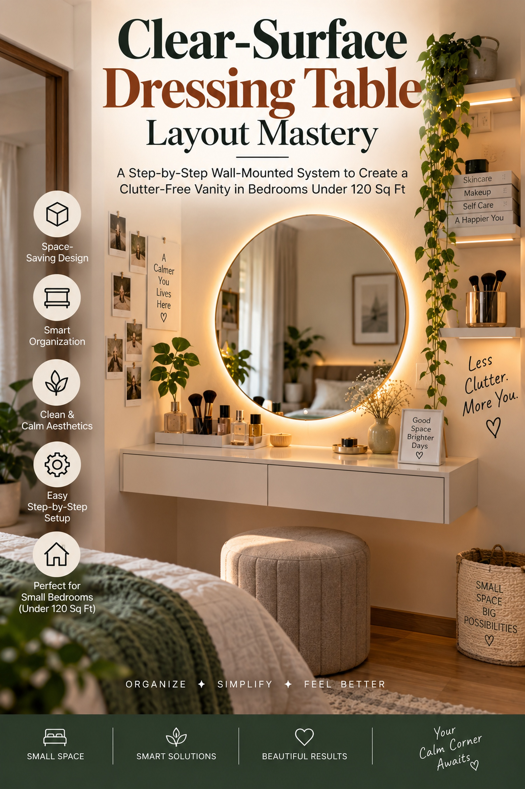
Chapter opener
Chapter
Measure-Map-Model Foundations For Under 120 Sq Ft Bedrooms
Dressing table means the furniture. Vanity zone means the table, stool, mirror, and required clearances. Grooming station means the complete system. Preferred walkway is 30–36 inches; 24 inches is a mitigated minimum only. A 28-inch aisle is a constrained exception, not a target. Stud and utility detectors are planning aids, not a guarantee. If the wall cannot safely carry storage, use freestanding or under-table storage instead of forcing mounts.
Day 1 · Room Measurement Protocols
Day 1
Room Measurement Protocols
In this apartment
Anita lives in a 1BHK apartment in Pune with a 9-foot living room. She needs to optimize her small bedroom, which measures 10 by 11 feet. To start, she gathers her tools: a steel tape measure and a laser distance tool, ensuring she captures every detail accurately.
Precise measurement prevents misalignment and cut mistakes.
Begin by measuring the wall lengths, ceiling height, and floor level differences. For Anita, this means checking the dimensions of her bedroom walls and noting the ceiling height, which is 8 feet. Use a steel tape measure, hooking it firmly on a corner or baseboard, and keep it level. Read measurements at eye level to avoid parallax errors.
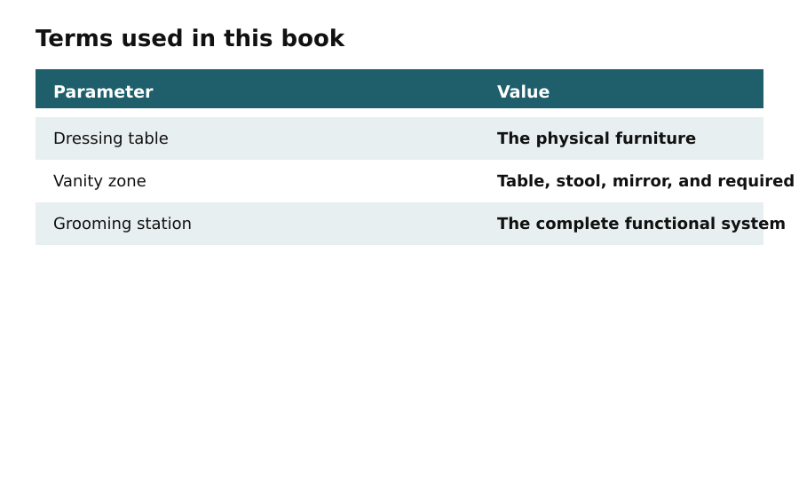
One primary name for each thing.
Next, check the squareness of the room by measuring diagonals from corner to corner. If the measurements differ, it indicates an out-of-square room. Anita notes this on her map, which will help her compensate during mounting. Capture window dimensions and clearances, ensuring she knows how far window frames project and how curtains will sit.
Twenty-eight inches is a constrained exception, not a target.
For doors, measure the swing arc. Anita places a piece of masking tape at the floor where the door edge returns, measuring the clearance needed to avoid collision with shelves or mirrors.
Rahul, living in a shared 1BHK in Bengaluru, needs to install a wall-mounted shelf in his bedroom. He uses an electronic stud finder to locate stud edges, ensuring he can safely mount his shelf without risking damage.
A stud/utility detector is a planning aid, not a guarantee that a drilling location is free of hidden services.
Today's output: stud marks, uncertain zones, and a written rule: do not drill into uncertainty.
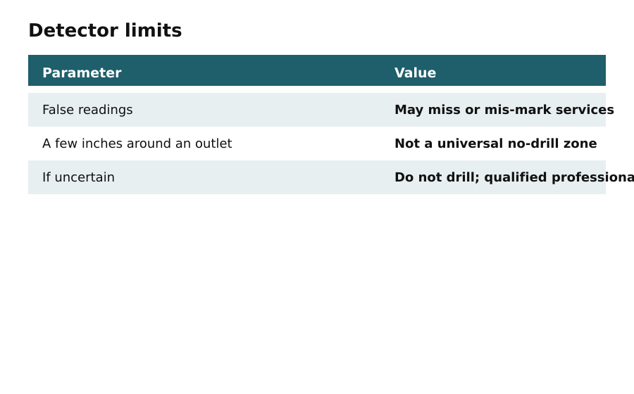
Planning aid, not a clearance certificate.
Scan for studs and, with a multi-mode detector if you have one, for possible electrical or plumbing indications. Mark centers and mark uncertain readings as no-drill. Never rely only on 'a few inches around an outlet' as a universal no-drill zone — wiring and pipes do not always follow that sketch. False positives and false negatives happen.
When wall construction or the utility path is uncertain, do not drill. Consult a qualified professional. The reader plans and documents; a qualified person opens walls and installs electrical work.
Before you move on
Scan and mark uncertain as no-drill
Do not treat outlet offset as a universal zone
Stop if the wall is unknown
Day 3 · Vertical Zoning And Ergonomics
Day 3
Vertical Zoning And Ergonomics
In this apartment
Neha, a resident of a 1BHK in Mumbai, is setting up her dressing area. She measures her eye level while seated on her vanity stool to determine the optimal height for her mirror and daily use items.
Place by frequency plus weight plus reach. Measured seated eye height overrides any 60–64 inch illustration.
Today's output: your seated eye height, standing eye height, and a frequency-plus-weight map.
Neha's seated eye level is 50 inches. That number — not a 60–64 inch illustration — sets her mirror center. The 60–64 inch figure is an illustrative reference range only; actual seated eye height overrides it.
Daily items often sit between elbow and eye because they are frequent, not because height is magic. Heavy items stay between hip and shoulder even if you use them daily. Light rare items may go higher only with a stable step plan. If children can access the vanity zone, hazardous or breakable items override accessibility: cosmetics, razors, medicines, perfume, nail products, electrical tools, and cords should be secured according to product labels and household rules. This book does not claim childproof storage. Pets can pull hanging cords, cups, and cosmetics — keep dangling loads off their reach.
Before you move on
Write your seated eye height
Heavy between hip and shoulder
Child/pet access overrides convenience
Day 4 · Inventory Volume Mapping
Day 4
Inventory Volume Mapping
In this apartment
Sanjay, living in a compact 1BHK in Delhi, is organizing his dressing table. He lays out all his items, grouping them by category to determine the volume needed for storage solutions.
Object volume is not usable container volume. Add a packing allowance.
Today's output: category volumes with a packing allowance, plus leak, jewelry, and expiry notes.
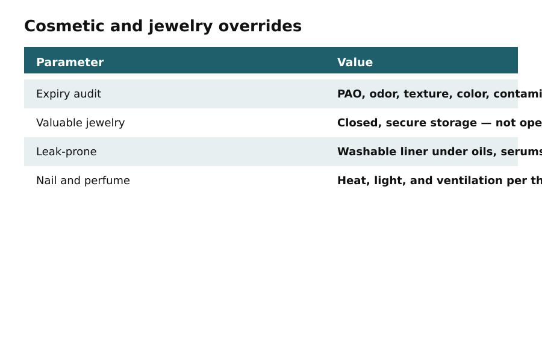
Follow the product label. This book is not a medical or security manual.
Count and measure, then do not sum object volumes as if they filled a cup perfectly. Estimate usable container volume with a practical packing allowance so cups and bins remain grab-able.
Leak-prone products — oils, serums, perfume, liquid foundation, nail products — go in a tray or bin with a washable liner. Valuable or sentimental jewelry uses secure closed storage, not exposed hooks. Run a cosmetic safety audit: expiry or PAO symbol, odor, texture, color, contamination, damaged packaging, and extra care for products used around the eyes. Follow the manufacturer's guidance. Perfume and some cosmetics are light- and heat-sensitive: closed, cooler, away from the cooling zone and windows. Nail products stay off heat tools, with spill protection and ventilation the label asks for.
Before you move on
Group items by category: cosmetics, skincare, fragrances, hair tools, jewelry, accessories.
Count items and measure typical dimensions.
Assign cubic inches to each category based on volume needs.
Check for overflow and adjust module sizes accordingly.
Chapter opener
Chapter
Space Planning And Clearance Standards For Vanities
Preferred walkway 30–36 inches. Compact 30 inches. Twenty-four inches only with mitigation on a short path. Twenty-eight inches is a constrained exception: short route, minimized protrusions, still usable — otherwise redesign toward 30–36. If anyone uses a mobility aid, their clearance overrides these planning ranges.
Part 2 · Space Planning And Clearance Standards For Vanities
Part 2
Space Planning And Clearance Standards For Vanities
Walkway hierarchy first. Vanity zone is not the whole bedroom.
Space Planning And Clearance Standards For Vanities Chapter Introduction You measured and mapped in the previous chapter. Now it is time to convert those numbers into a plan that protects movement, posture, and your clear surface promise. In compact bedrooms under 120 square feet, inches matter. The right clearances prevent knee knocks at the stool, keep elbows free from collision, and stop door swings from clipping your mirror or shelves.
Twenty-eight inches is a constrained exception, not a target.
This chapter gives you the rules of thumb and working formulas to define three critical zones, the vanity zone, the walkway zone, and the storage faces. You will apply the 3C Clearance Matrix, Clearance, Comfort, Circulation, to set minimums and preferred targets. By the end, you will place your dressing table in the right spot relative to walls, windows, and doors, and assign precise coordinates for staging shelves, docking hooks, and rails that keep the tabletop unburdened during every routine.
If your room cannot support that, protect a 24 inch minimum aisle with mitigation strategies that preserve access.
Compact bedrooms compress everything. When a vanity goes in without planning, three issues almost always show up. First, crowding and knee knocks. The stool bumps into the bed or the wall, so you sit twisted or perched. Second, shadowing and glare. Light reflects off the mirror at the wrong angle, so you squint or get uneven lighting on your face. Third, circulation failures. Doors swing into shelves, closet entries conflict with stool positions, and daily routines feel like obstacle courses.
In compact rooms, the preferred walkway is 30 to 36 inches.
The result is a dressing table that becomes a catch all for items that do not dock properly. Brushes sprawl, hair tools sit hot and exposed, and the tabletop becomes a halfway house for things that have no assigned place. You do not want that. A clear surface requires a plan that protects reach ranges, walkway width, and safe traffic paths. The 3C Clearance Matrix The 3C Clearance Matrix turns measurements into decisions. It has three lenses.
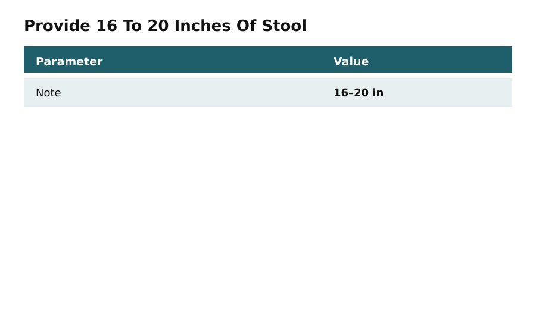
Provide 16 to 20 inches of stool slide clearance between the front of the dressing table and the nearest obstruction.
Clearance. These are the minimums and targets that prevent contact, pinch points, and collisions. Examples include walkway width and stool slide depth. Comfort. These values support posture and ease. They include mounting heights that align with eye level and elbow motion, plus safe reach ranges for frequently used items. Circulation. This lens protects movement through the room. It covers door swing arcs, draft paths from windows, and traffic flows from bed to closet to bathroom.
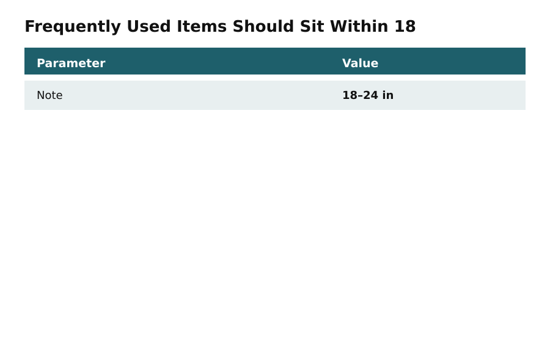
Frequently used items should sit within 18 to 24 inches of reach from your seated position.
Define Three Zones Before You Place Anything Vanity Zone. This is the footprint around the dressing table and mirror where you sit, reach, and dock in session items. It includes stool slide clearance in front of the table and the vertical face above and beside the mirror. Walkway Zone. This is the aisle that allows you to pass between furniture and the vanity. In compact rooms, the preferred walkway is 30 to 36 inches. If your room cannot support that, protect a 24 inch minimum aisle with mitigation strategies that preserve access.
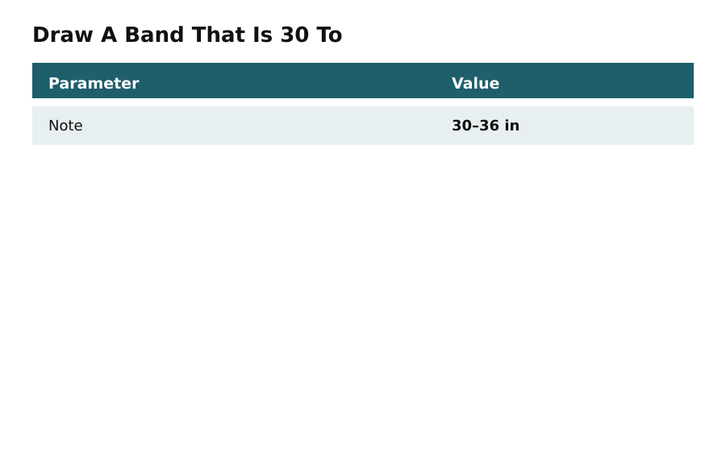
Draw a band that is 30 to 36 inches if your room allows.
Storage Faces. These are the vertical planes where wall mounted modules live. You will organize these faces by frequency and weight. Heavy items go between hip and shoulder height. Daily items go at eye to elbow height. Rarely used items can go higher, with step safe planning. Quantifying The Standards Start with movement. A walkway of 30 to 36 inches feels natural for face forward walking. It allows you to carry a laundry basket or pass another person.
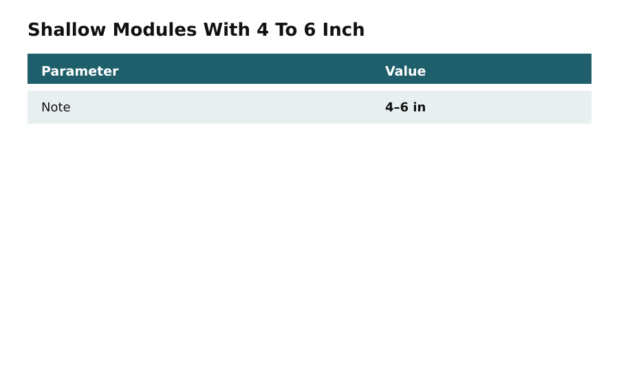
Choose shallow modules with 4 to 6 inch depth.
If you must reduce to 24 inches, compensate. Face the walkway to the most frequently used path in the room, for example bed to closet, and keep protrusions shallow. Avoid deep shelves right opposite the aisle. Seat clearance matters. Provide 16 to 20 inches of stool slide clearance between the front of the dressing table and the nearest obstruction. This depth allows you to slide in and out without banging your knees. If you use a stool without a back, the lower end of the range can work. If you prefer a chair with a back, aim at the higher end.
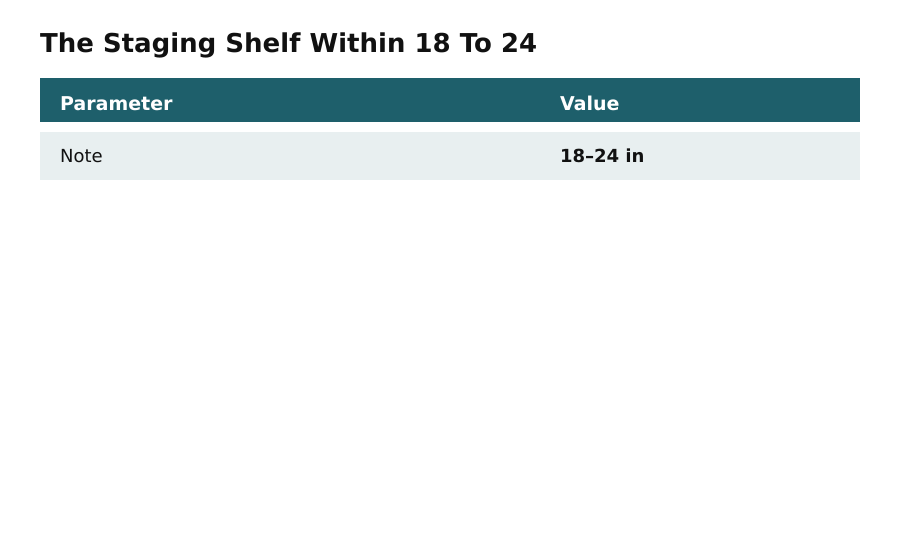
Place the staging shelf within 18 to 24 inches of reach from your seated position.
Plan reach ranges. Frequently used items should sit within 18 to 24 inches of reach from your seated position. That means that your staging shelf or rail should land where your hand naturally extends without lifting the shoulder. Skincare bottles, brushes, and pencils belong in this zone. Heavier items, like a hair dryer, should dock between hip and shoulder height. Rarely used items, like a travel bag or a backup set of tools, can live higher in a cabinet or on a top shelf, but only if you have a step safe plan.
Walkway minimum, 24 inches.
Mind light and air. Position the dressing table relative to windows so that light falls evenly on your face. Avoid direct glare. If a window sits directly behind you, shadows will form. Offset the vanity or add a lateral staging shelf that holds a task light to the side of the mirror. Draft discomfort also matters. Place the stool away from direct airflow if the window or radiator creates a strong current.
Respect door swings. Map the swing arcs you captured earlier. Create buffer zones that keep mirrors and shelves outside the path of any door or closet entry. Pay special attention to hinge side clearances. If the door opens toward your vanity wall, mount hardware so that it does not meet the door edge during the swing. Integrating The Clear Surface Promise A clear surface policy means nothing lives permanently on the tabletop. To make that workable, create three support elements.
Staging Shelf. Mount a narrow shelf above or beside the mirror to hold in session items. This is where bottles and brushes land during routines. It keeps your hands free and the tabletop open. Docking Pegs Or Hooks. Add a set of pegs or hooks for tools that temporarily leave your hands, like a hair dryer or straightener. Use heat safe offsets. Keep at least six inches of space from any heated surface or radiator.
Slim Wall Cup Or Rail. Install a cup or rail for slender tools, like brushes or pencils. This prevents tabletop sprawl and reduces grab time.
Define the vanity zone with a rectangle on your map. The stool sits centered on the mirror. Mark 16 to 20 inches in front of the tabletop for slide clearance. Check the bed edge. If the bed intrudes, shift the dressing table laterally or rotate the stool slightly, but preserve the rectangle. Identify the walkway zone. Draw a band that is 30 to 36 inches if your room allows. If you must settle at 24 inches, plan mitigation. Choose shallow modules with 4 to 6 inch depth. Rotate shelf spans so that longer dimensions run parallel to the wall, not sticking into the aisle. Keep the walkway clear of cords by routing hair tool cords to a docking side where they do not cross the path.
Organize storage faces by frequency and weight. Place the staging shelf within 18 to 24 inches of reach from your seated position. If you prefer to stand for part of the routine, split the shelf into two short shelves, one aligned for seated reach and one aligned for standing reach. Mount heavier items, like a storage basket for hair tools, between hip and shoulder height. Create a top zone for rarely used items and plan a safe step. If you include a foldable step stool, store it within the room, not across a doorway.
Optimize lighting. If your window causes glare, rotate the mirror slightly to break the reflection or add a task light at a lateral angle. Ensure the light does not cast shadow across your face. Two light sources, one overhead and one lateral, often produce balanced illumination without adding bulk. Guard door swings. This is where hinge side clearances are critical. Mount the mirror and shelves outside the door arc. If the closet door opens toward the vanity, leave a small buffer zone between the door edge and any module. If you cannot avoid proximity, choose a module with rounded corners and shallow depth to reduce impact risk.
Plan for heat and obstructions. Radiators need at least six inches of separation from any module or cord. Column intrusions and angled walls call for offset mounting. Mirror the vanity zone to the opposite wall if one side creates collisions. Low ceilings may require lower mounting heights for top shelves. Reduce vertical stacking if the ceiling compresses reach ranges.
Implementation Strategy Step one, overlay zones on your map. Building on your Measure Map Model, draw the vanity rectangle, the walkway band, and the storage faces. Use colored lines if you are working on paper. Label each zone, do not worry about module specifics yet. Step two, set your minimums and targets. Write the numbers on your map. Walkway target, 30 to 36 inches. Walkway minimum, 24 inches. Stool slide clearance, 16 to 20 inches. Reach range for frequent items, 18 to 24 inches.
Heat safe offset, at least six inches from any heated surface. Step three, choose orientation relative to light and doors. Stand in the room and face the vanity wall. Notice window position. Place the mirror so that natural light hits your face, not the mirror directly. Confirm door swing arcs. Adjust the vanity laterally until the stool sits outside any conflict path.
Step four, assign coordinates for staging and docking. Draw a staging shelf line above or beside the mirror. Mark its centerline relative to your seated position. Add docking pegs or hooks to one side, ideally the side that does not face the walkway. Add a slim wall cup or rail for brushes within your seated reach. Step five, commit to the clear surface policy. Write it on your map. No permanent items on the tabletop. In session items only. All tools docked on wall faces when not in hand.
Step six, run the Walk Work Test. Sit on the stool. Reach to the staging shelf, the rail, and the hooks. Simulate your routine for five minutes. Time yourself. Count any collisions or near misses. If elbows bump, adjust. If cords cross the walkway, reroute docking to the other side. If you cannot reach a frequently used item without shoulders lifting, lower its mount.
Step seven, adjust for special conditions. If you have angled walls, rotate modules to align with reachable faces. If you have low ceilings, compress the vertical stack and move rarely used items to a cabinet with a door. If you have a radiator, shift the vanity or move docked tools away from heat. Maintain the six inch offset. Step eight, finalize the plan. Circle the positions that passed the test. Note any modules that require alternative mounting hardware. The next chapter will help you select the exact components, but your map now carries the clearances and heights that govern those choices.
Real World Application Case Study 1, Solo Bedroom With Radiator Maya lives in a 112 square foot rental with a radiator under the window. Her initial plan placed the dressing table directly in front of the window. The stool felt hot, and cords draped across the walkway. Using the 3C Matrix, Maya shifted the vanity to the adjacent wall. She protected a 30 inch walkway from bed to closet and kept at least six inches between any module and the radiator.
A staging shelf sat 20 inches from her seated reach. Hooks for the hair dryer mounted on the side away from the walkway, which eliminated cord crossings. The tabletop stayed clear because in session items lived on the staging shelf. Her Walk Work Test revealed no collisions, and the timed routine came down from seven minutes to five. Case Study 2, Shared Room With Closet Conflict Daniel and Priya share a 118 square foot bedroom. The closet door opens toward the corner where they wanted the vanity. They drew the door swing on their map, then created a buffer zone for hardware. They aimed for a 36 inch walkway along the bed edge because they often pass each other in the morning. Since the closet door posed a risk of mirror collision, they mounted the mirror slightly offset and selected shallow shelves at 4 inch depth beside the mirror instead of above it. Hooks for tools sit on the hinge side away from the door arc. The stool slide clearance uses 18 inches, which fits nicely. Their Walk Work Test uncovered one pinch point when the closet door opened while Priya was seated. They solved it by adding a stool that tucks under the table when not in use. The clear surface stayed intact because items docked on wall faces, not on the tabletop.
Case Study 3, Airbnb Micro Suite With Guest Safe Storage A host manages a 95 square foot micro suite. The vanity must be intuitive for guests. The plan created labeled storage faces with clear visual logic. Daily items sit on the staging shelf at eye to elbow height with labels like Brushes, Skincare, Hair Tools. Heavier spare items live between hip and shoulder height in a shallow cabinet with a door. Rare items go higher with a note that a folding step is in the closet. The walkway measures 30 inches from bed to bathroom door. A docking rail on the side away from the walkway controls cords. The mirror sits opposite the window to avoid glare. Guests report easy use and the tabletop remains clear because the visible storage logic guides behavior.
Common Pitfalls Ignoring Door Swing Arcs. If you skip mapping door swings, you risk collisions. Draw every swing, then keep hardware outside the arcs. Underestimating Walkway Needs. Aisles that dip below 24 inches turn into squeeze zones. If you cannot expand the walkway, choose shallower modules and route cords away from the path. Mounting Too High Or Too Low. If frequently used items sit outside the 18 to 24 inch reach range, you start lifting shoulders or bending. Fix the heights to match your posture.
Forgetting Heat And Draft. Radiators and windows change comfort. Keep at least six inches from heat sources and avoid seating in direct drafts. Violating The Clear Surface Policy. If you allow permanent items on the tabletop, clutter creeps back. Use a staging shelf and docking points to hold in session items. Creating Storage Without Flow. Storage faces must sit where your hands move.
If modules live in visually pretty but awkward positions, you will not use them. Position by reach and routine, then refine aesthetics. Overcrowding The Wall. Too many modules reduce circulation. Breathable spacing matters. Protect the walkway first, then add modules within reach zones.
Your plan should protect three zones, vanity, walkway, and storage faces, before you select modules. Use the 3C Clearance Matrix to balance clearance, comfort, and circulation, the core of safe movement and posture. Target a walkway of 30 to 36 inches. If needed, maintain a 24 inch minimum with mitigation like shallow modules and cord routing. Provide 16 to 20 inches of stool slide clearance to prevent knee knocks and awkward seating.
Keep frequently used items within 18 to 24 inches of seated reach. Mount heavier items between hip and shoulder height. Maintain at least six inches of separation from radiators and other heated surfaces. Position the vanity to avoid glare and draft discomfort. Orient mirror and task light for even facial illumination. Map door swing arcs and create buffer zones, so mirrors and shelves do not collide with doors.
Enforce the clear surface policy with a staging shelf, docking hooks, and a slim rail or cup for brushes. Validate the plan with a timed Walk Work Test, then adjust until movement feels natural and collision free.
Overlay the vanity, walkway, and storage face zones on your room map using the dimensions above. Set written targets for walkway width, stool clearance, reach ranges, and heat offsets on the map. Choose vanity orientation relative to windows and doors to minimize glare and draft discomfort. Place a staging shelf and docking hooks within your seated reach, preferably on the side away from the walkway.
Add a slim rail or cup for brushes to prevent tabletop sprawl during routines. Simulate your routine with the Walk Work Test, time it, and record any contact points. Adjust module positions to eliminate collisions. Confirm cords do not cross the walkway. Account for special conditions like angled walls or low ceilings using offset mounting and reduced vertical stacking.
Finalize the plan by circling positions that passed the test. Prepare notes for component selection in the next chapter. Chapter Conclusion A compact bedroom can feel generous when movement is protected and reach is planned. Clearances, heights, and flow patterns are not abstract. They are the guardrails that keep your clear surface promise intact. By defining the vanity zone, the walkway zone, and the storage faces, then applying the 3C Clearance Matrix, you set minimums and targets that prevent crowding, shadowing, and collisions.
With this plan complete, you are ready to choose the specific wall mounted components that match your inventory and load needs. In the next chapter, Selecting Modular Wall Mounted Storage, Shelves, Pegboards, And Cabinets, you will turn coordinates and clearances into a shopping list and mounting specifications that lock in speed, safety, and style.
Chapter opener
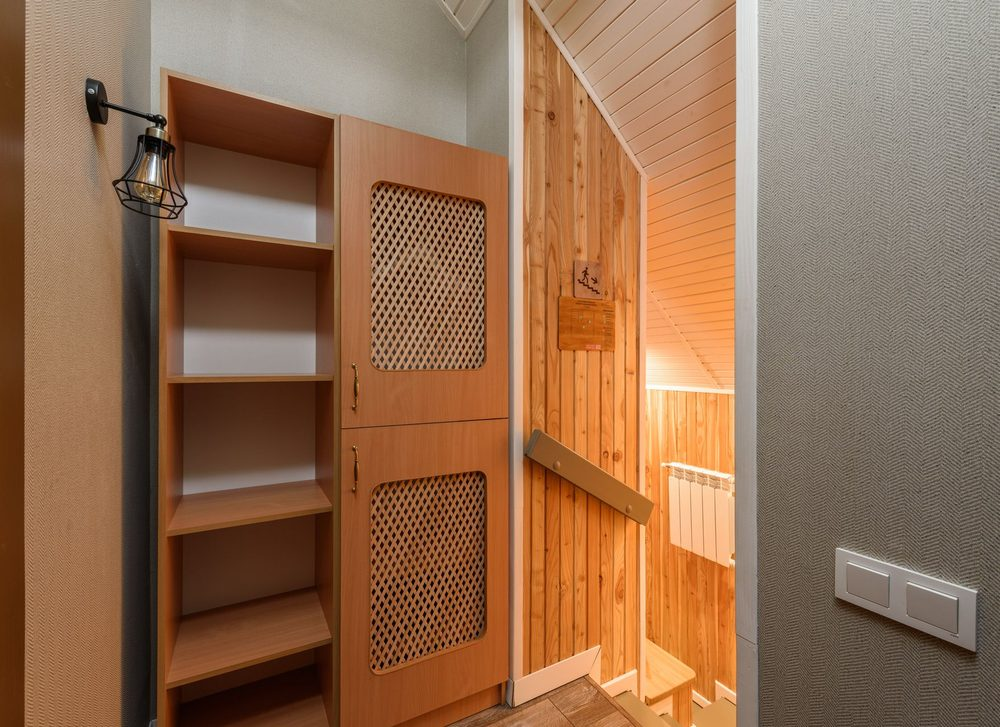
Chapter
Selecting Modular Wall-Mounted Storage: Shelves, Pegboards, And Cabinets
In compact bedrooms under one hundred twenty square feet, every inch matters, and every routine needs a quick, repeatable path from wall to hand to face. This chapter shows you how to select modular wall-mounted storage that keeps essentials visible when needed and invisible when not.
Day 1 · Understanding the MODS Framework
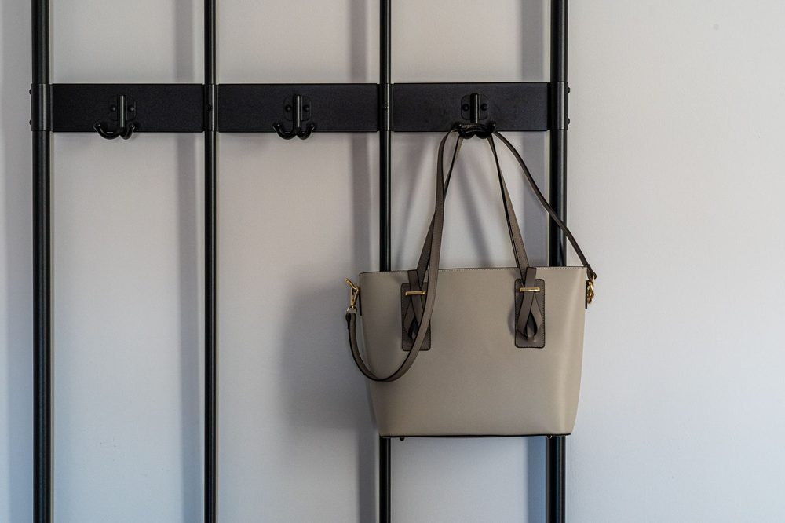
Day 1
Understanding the MODS Framework
In this apartment
Riya lives in a 1BHK apartment in Pune with a 9-foot living room. She struggles to keep her dressing table organized amidst her busy mornings.
The MODS Selector helps balance visibility, dust control, and safety for each item category.
The MODS framework stands for Modular, Open, Door, and Secure. Each category of items should be assessed using these four sliders to determine the best storage solution.
Modular components can be rearranged or added later, making them adaptable to changing routines. Open modules prioritize speed and visibility, allowing for quick access to frequently used items. Door modules help control dust and maintain a clean look, while secure modules protect against falls and heat, ensuring safety in your space.
To implement this framework, Riya can categorize her items based on how often she uses them and how much visibility and protection they require. For instance, her daily skincare products would fall under Open, while her hair tools would be categorized as Secure.
Day 2 · Choosing the Right Storage Systems
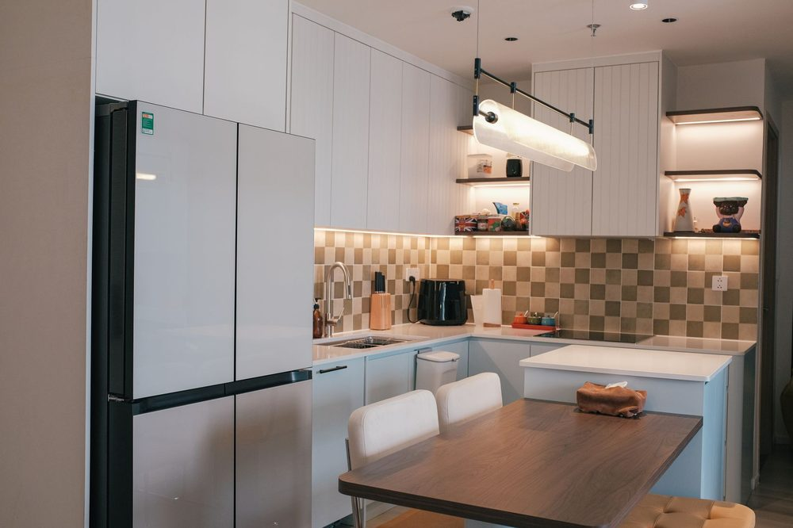
Day 2
Choosing the Right Storage Systems
In this apartment
Anjali lives in a Bengaluru rental with a load-bearing wall. She needs to maximize her space without compromising on style.
Select storage systems that fit your wall structure and respect load limits.
Common systems include perforated metal pegboards, slimline floating shelves, shallow cabinets, rail and cup systems, hooks, and magnetic docking. Each system has its strengths and is suited for different types of items.
For Anjali, a perforated metal pegboard would provide flexibility for her hair tools and accessories, while slimline floating shelves can display her skincare products at eye level. Shallow cabinets can be used for bulk storage, keeping the visual noise to a minimum.
When selecting these systems, it's crucial to consider the depth, width, and hole patterns. Components should be between four and eight inches deep to maintain circulation and avoid crowding.
Day 3 · Mapping Items to Modules
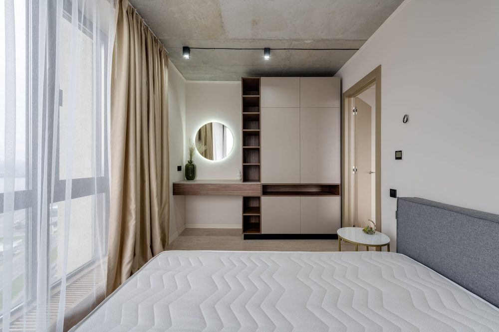
Day 3
Mapping Items to Modules
In this apartment
Vikram lives in a Mumbai flat with a window on only one side. He needs to optimize his limited space for his grooming essentials.
Map your items to the appropriate modules for efficient storage and access.
To keep the dressing table clear, items should be mapped to specific modules. For example, daily skincare can be stored in shallow drawers or lidded bins inside a cabinet, while makeup essentials can be placed on an open shelf at eye level.
Vikram can use a rail with clip-on cups for brushes and pencils, labeling each cup by type to maintain organization. Hair tools should be mounted on heat-safe hooks with adequate spacing to prevent tangling and heat risks.
By categorizing and mapping items effectively, Vikram can ensure that his daily essentials are easily accessible while keeping the tabletop clear.
Day 4 · Load and Anchor Basics
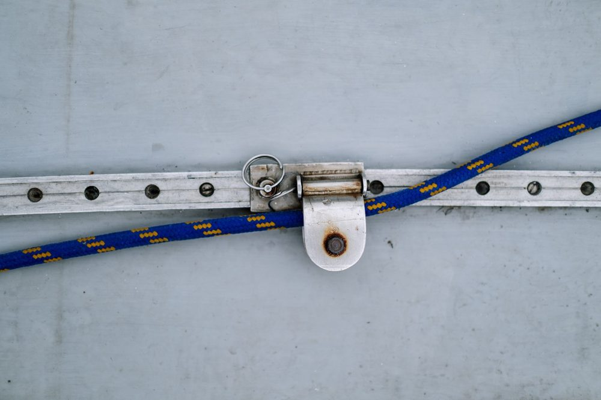
Day 4
Load and Anchor Basics
In this apartment
Sneha has a compact bedroom in a 1BHK in Pune. She needs to ensure her wall-mounted storage is safe and secure.
Rated load is manufacturer-specific. Adhesive is not a universal capacity. Do not load-test toward failure.
Today's output: each module labeled with maker rating, wall type, and path A or B.
Compatible with rental constraints, not damage-free.
Verify the manufacturer's rated load and installation requirements first. After installation, a cautious stability check with a light load — not a test toward maximum capacity or failure.
Adhesive pegboards, tabs, and mounts: use only products whose manufacturer explicitly approves the actual wall surface and application. Rated load depends on paint, texture, dust, humidity, temperature, cure time, load direction, repeated loading, surface age, and item shape. Treat the number as a manufacturer-specific maximum, not a universal capacity. Test a light load before relying on the system. Do not use adhesive for heavy mirrors or safety-critical loads unless the product is specifically designed and rated for that purpose.
If the wall cannot safely carry the required storage, stop wall-mounting. Fallback: freestanding narrow storage, under-table drawers, or a closed cabinet. Choosing a different anchor is not always the answer.
Day 5 · Implementing Your Storage Plan
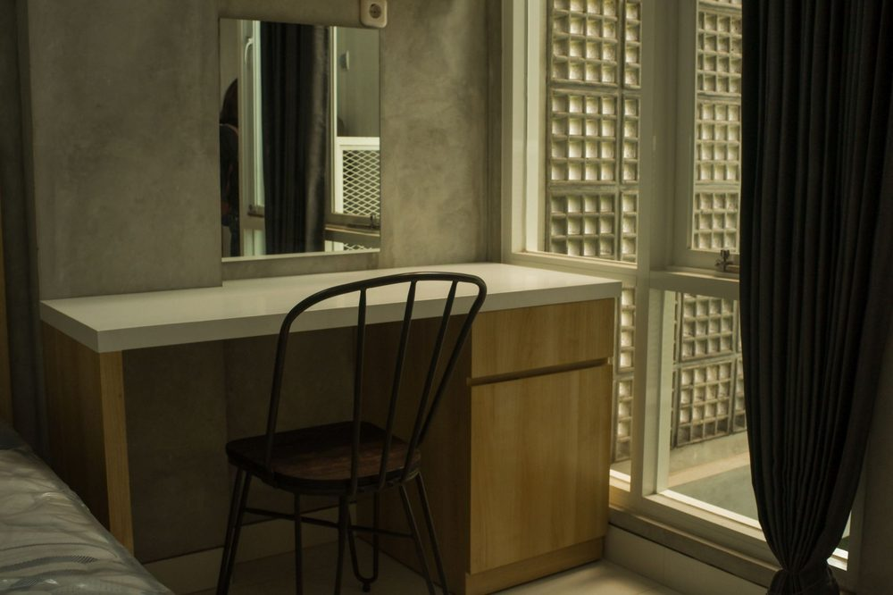
Day 5
Implementing Your Storage Plan
In this apartment
Tarun is setting up his new dressing table in a 120-square-foot apartment in Bengaluru and wants to implement the MODS framework effectively.
Renters pick a path: permission-to-drill or no-drill. Not both by accident.
Today's output: path A or path B written on the spec sheet.
Permission-to-drill path: studs, cleats, screws, anchors — only with landlord permission. No-drill path: removable systems, lightweight modules, manufacturer-rated adhesive. 'Renter-safe' means compatible with rental constraints, not automatically damage-free or drill-free. Removable in theory is not a guarantee of a clean wall.
Do not plan adhesive now and mechanical anchors 'later' as if that were one renter-safe method. That is two paths. If the wall is unsuitable, use the freestanding fallback.
Chapter opener
Chapter
Ergonomic Mirror And Lighting Placement For Shadow- Free Grooming
Chapter 4: Ergonomic Mirror And Lighting Placement For Shadow Free Grooming Chapter Introduction Your face is the canvas for daily routines, yet most compact bedrooms produce unflattering shadows and color shifts that make grooming harder than it needs to be. Overhead lights throw halos, table lamps eat up surface space, and mirrors mounted at generic heights warp eye lines when you sit. In a room
Part 4 · Ergonomic Mirror And Lighting Placement For Shadow- Free Grooming
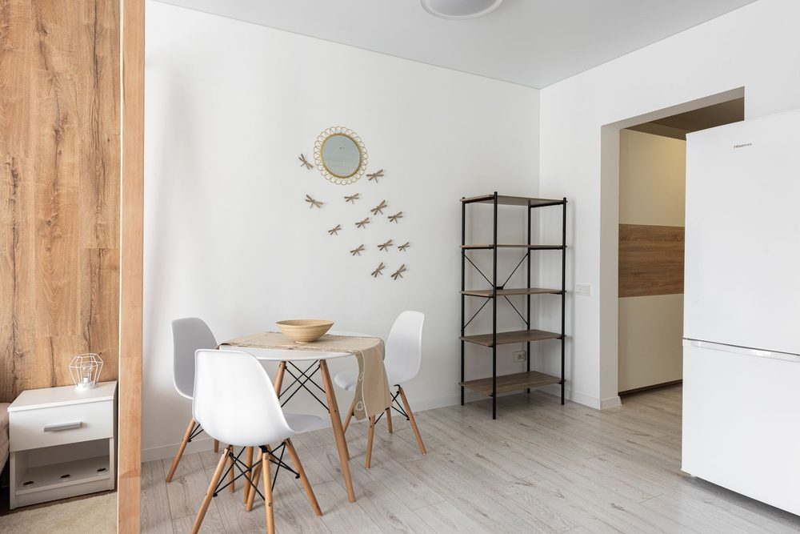
Part 4
Ergonomic Mirror And Lighting Placement For Shadow- Free Grooming
Balance seated eye height, mirror size, table gap, and standing view. They are not one simultaneous equation.
Today's output: a mirror plan that lists constraints, not a fake single solution, plus an electrical limit card.
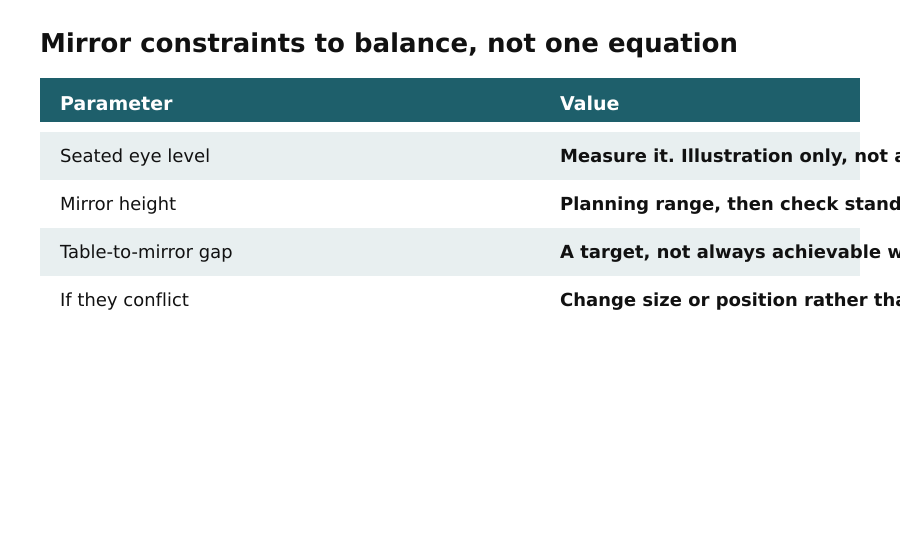
Measured seated eye height overrides any 60–64 inch illustration.
Hierarchy, in order: (1) measure actual seated eye level on your stool — this overrides any 60–64 inch illustration; (2) choose a desired mirror height as a planning range, often 30–36 inches, shorter if the room is tight; (3) check the table-to-mirror gap, often aiming 6–10 inches; (4) check standing visibility if you need it; (5) change mirror size or position when those values conflict. Example: seated eye 60 inches, 36-inch mirror, 30-inch table can put the bottom 12 inches above the table — outside 6–10 inches. That is a conflict to resolve, not a failure to 'follow the formula.' A shorter mirror may clear the table and miss standing coverage. Adjust; do not force all three.
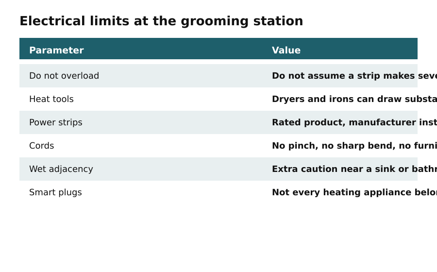
A strip does not make high-wattage tools safe. Follow the maker.
Electrical at the grooming station: do not overload a strip with multiple high-wattage heat tools. Hair dryers, straighteners, and curling irons can draw substantial power. Use power strips that are appropriately rated and follow the manufacturer. Do not pinch cords behind furniture or run them through sharp bends. If the dressing table is near a bathroom or sink, placement and protection need extra attention — a qualified professional for anything beyond a plug-in. Do not assume every high-power heating appliance is appropriate for a smart plug. Hardwired lighting is not a renter project. The reader plans; qualified people install.
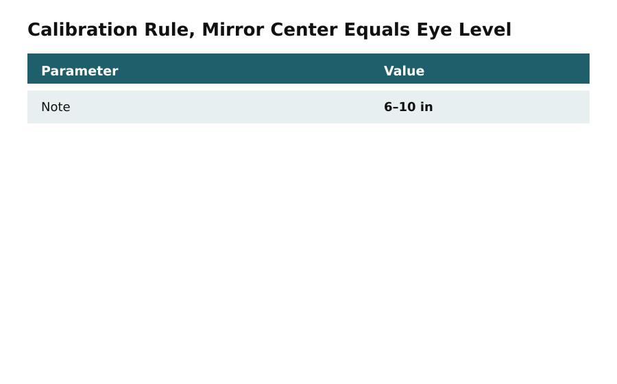
Calibration rule, mirror center equals eye level, mirror bottom clearance equals 6 to 10 inches above the dressing table surface, mirror top equals center plus half of mirror height. If you stand frequently, ensure the top of the mirror sits at least 2 inches above your standing eye level so you do not cut off your forehead in the view.
Chapter 4: Ergonomic Mirror And Lighting Placement For Shadow Free Grooming Chapter Introduction Your face is the canvas for daily routines, yet most compact bedrooms produce unflattering shadows and color shifts that make grooming harder than it needs to be. Overhead lights throw halos, table lamps eat up surface space, and mirrors mounted at generic heights warp eye lines when you sit. In a room under 120 sq ft, every inch and every lumen must be intentional.
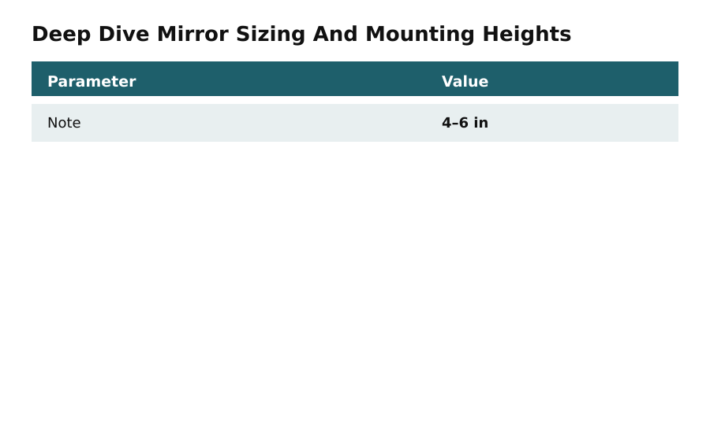
Deep Dive Mirror Sizing And Mounting Heights Width, measure your shoulder breadth, then add 4 to 6 inches on each side.
This chapter gives you exact coordinates for mirror and lighting placement that deliver shadow free, accurate illumination without touching your dressing table surface. Building on your wall mounted storage map, you will set ergonomic mirror heights, choose glass that does not distort, and apply the GLOW Formula to layer vertical task lights with ambient light for natural skin rendering. By the end, you will have a clear plan that works whether you rent or own, along with cord management that keeps your tabletop pristine.
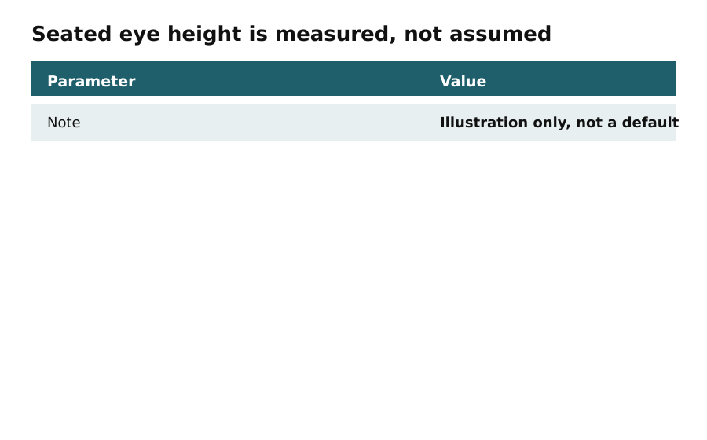
Sixty to sixty-four inches is an illustration only. Actual seated eye height overrides it.
Compact bedrooms amplify lighting and mirror errors. Common issues include: Overhead only light that casts nose and chin shadows, making blending difficult. Mirror centers set too high for seated grooming, forcing you to crane your neck. Narrow mirrors that truncate your visual field, causing uneven hair parting and missed details. Cool white bulbs that flatten skin tones and make reds and neutrals look gray.
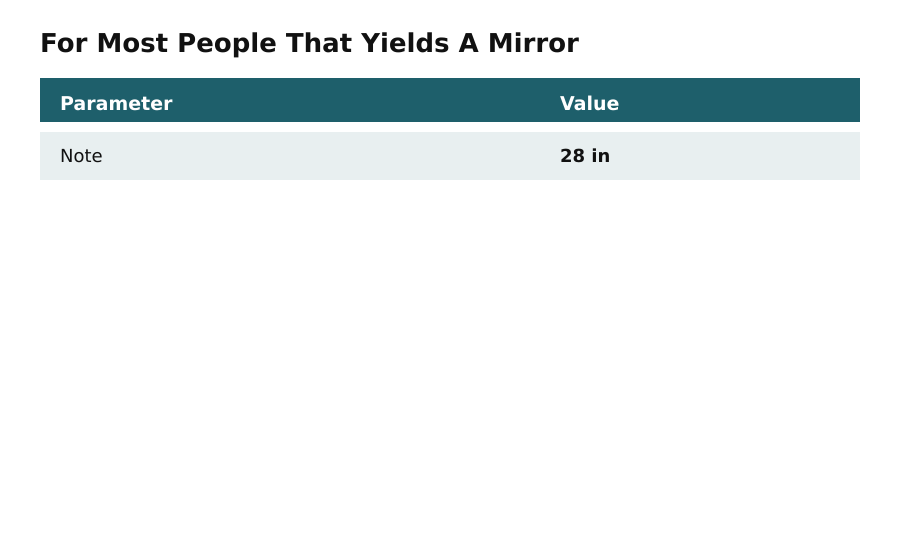
For most people that yields a mirror between 20 and 28 inches wide.
Lamps sitting on the dressing table, creating clutter and glare while stealing usable surface area. Poor mounting in hollow drywall that leads to wobbly mirrors and dangerous fixtures. These problems create daily friction. You spend extra minutes correcting color undertones, you misjudge texture and symmetry, and cords creep onto the table. In a small room, that friction feels larger because there is no spare space to compensate.
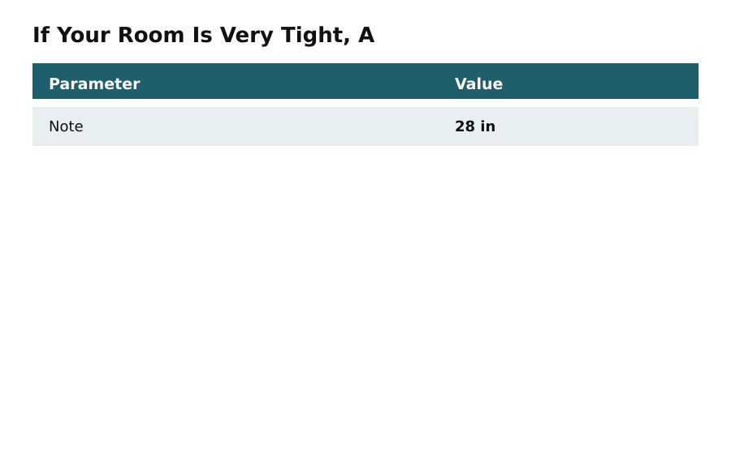
If your room is very tight, a 28 inch height can work when paired with vertical lights that extend your visual field. For fog control near bathrooms, select anti fog coatings or add a small gap on both sides, at least 1 inch, so air can circulate behind the mirror.
Use the GLOW Formula to design lighting around the human face and your exact posture. Glow, create even vertical illumination at face height so features read accurately. Layer, combine task lighting with ambient and accent light to avoid harsh contrasts. Offset, position lights at precise distances from mirror edges and heat sources to minimize shadows and protect materials.
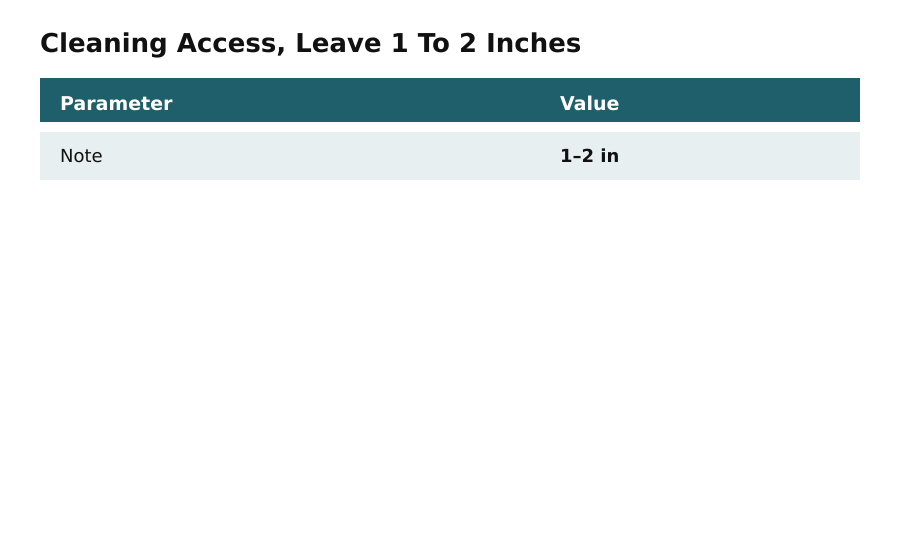
Cleaning access, leave 1 to 2 inches between mirror edge and adjacent storage modules.
Warm, choose high CRI and warm color temperature so skin tones look true. Pair GLOW with ergonomic mirror selection. Choose a mirror width that brackets your shoulders with comfortable margins, a height that covers both seated and standing use, and a mounting height aligned to your eye level rather than generic builder standards. Avoid distortion with flat glass. Align all mounts to studs where possible, or use reinforced plates that spread load when studs are not available.
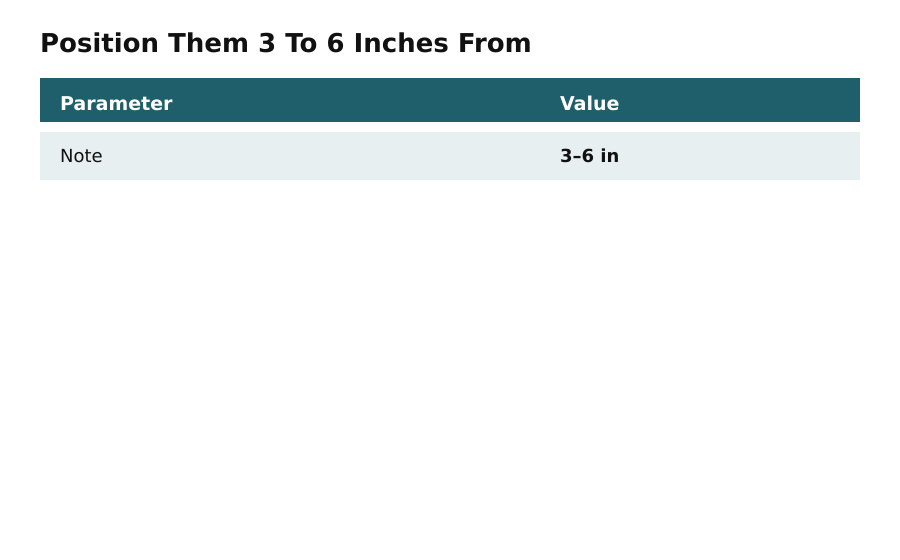
Position them 3 to 6 inches from mirror edges.
Mirror Sizing And Mounting Heights Width, measure your shoulder breadth, then add 4 to 6 inches on each side. For most people that yields a mirror between 20 and 28 inches wide. This width ensures your face and both shoulders are visible without turning. If two people share the mirror, size to the wider shoulder breadth. Height, cover both seated and standing use. Many compact bedrooms use a stool for seated grooming and occasional standing checks. A practical height is 30 to 36 inches. If your room is very tight, a 28 inch height can work when paired with vertical lights that extend your visual field.
Space the two lights 24 to 36 inches apart center to center.
Mounting height, set the center of the mirror at your seated eye level for grooming. An illustrative reference range sometimes quoted is 60 to 64 inches; it is not a default. Actual seated eye height overrides it. Measure on your stool. Sit on your chosen stool, look straight ahead, mark the eye center on the wall, then aim to place the mirror center within one inch of that mark. If you stand frequently, ensure the top of the mirror sits at least 2 inches above your standing eye level so you do not cut off your forehead in the view.
Calibration rule, mirror center equals eye level, mirror bottom clearance equals 6 to 10 inches above the dressing table surface, mirror top equals center plus half of mirror height. This clearance preserves a visual gap and allows light fixtures to flank without crowding the table. Glass And Distortion Control Use flat glass rather than flexible acrylic for accurate reflection. Acrylic can bow slightly and warp contours. For fog control near bathrooms, select anti fog coatings or add a small gap on both sides, at least 1 inch, so air can circulate behind the mirror. Choose a sealed backing when moisture is a concern.
Cleaning access, leave 1 to 2 inches between mirror edge and adjacent storage modules. This side access lets you clean edges without moving fixtures. It also prevents light fixtures from pressing against the mirror. Lighting Layers With The GLOW Formula Glow Vertical task lights, install two sconces or LED strips aligned vertically on either side of the mirror. Position them 3 to 6 inches from mirror edges.
Space the two lights 24 to 36 inches apart center to center. This geometry illuminates both sides of the face evenly and reduces nose and chin shadows. Height alignment, place the center of each light source at your eye level. For sconces with shades, the light emitting part should straddle eye height. For LED strips, run the strip from just below shoulder height to slightly above forehead height, typically 48 inches to 68 inches from the floor, depending on user height.
Layer Ambient light, pair the vertical task lights with a ceiling fixture that diffuses light broadly. A flush mount with a soft diffuser reduces contrast without creating hard downward shadows when task lights are active. Aim for a total room illumination of 20 to 30 foot candles for general use, with task light adding focused brightness at the mirror.
Accent light, add a soft accent such as a small cove or a dimmable strip above storage modules if desired. Keep accent light low intensity so it does not compete with task light. Offset Mirror edge offset, keep lights 3 to 6 inches away from mirror edges to avoid edge brightening and to allow cleaning access. Heat offset, keep lights and mirror at least 8 inches away from radiators and 6 inches from vents. Heat can degrade adhesives and coatings over time, and airflow can introduce draft related flicker or dust streaks.
Warm Color rendering index, select CRI 90 plus. High CRI makes lipstick, foundation, and skin undertones look consistent across indoor and daylight contexts. Lighting designers target CRI 90 plus for grooming tasks because low CRI can distort reds and desaturate neutrals. Color temperature, choose 2700 to 3000 Kelvin for warm, natural skin tones. If your room has strong daylight, bias toward 3000 Kelvin. If your room is darker and relies mainly on artificial light, 2700 Kelvin creates a soft, flattering effect.
Brightness, for each side light, target 500 to 800 lumens. LED strips measured in lumens per foot should deliver an equivalent, typically 300 to 400 lumens per foot, with 2 feet active at face height. Dimmability is helpful so you can tune brightness to morning or evening conditions. Plug In Versus Hardwired, And Cord Management Renter friendly plug in, choose sconces with cord outlets or LED strips with adapters that plug into wall sockets. Route cords along adhesive channels, in the same finish as your wall, and run them vertically then horizontally to the outlet. Use cord clips to secure slack behind storage modules. Add a smart plug or timer that turns lights off automatically after a set interval.
Hardwired, if you own and can open walls, hardwire a junction centered above each sconce location. This hides cords and frees outlets for other uses. Consult an electrician for code compliance, especially in rooms adjacent to bathrooms. Mounting And Safety Stud alignment, use a stud finder to locate studs. Mount heavy mirrors to studs with appropriate screws. If the stud location is not ideal for the mirror center, use a cleat or a hybrid mounting plate that spreads load across multiple fasteners in hollow drywall. A continuous backer board behind the mirror can also distribute load.
Fixture mounting, for plug in sconces, follow manufacturer ratings and use wall anchors rated for the fixture weight. For LED strips, use high quality adhesive channels or magnetic mounts. Avoid cheap adhesives that dry out near heat sources. Bathroom adjacency, if your bedroom wall shares a bathroom, moisture can migrate. Choose sealed fixtures and avoid fabric shades that can absorb humidity. Maintain offsets from vents and radiators as noted above.
Implementation Strategy Step 1, Confirm Eye Levels Sit on your chosen stool. Look straight ahead. Have a helper mark your eye level on the wall with painter tape. Stand in front of the same spot. Mark your standing eye level. Note the difference. Step 2, Choose Mirror Dimensions Measure shoulder breadth. Add 8 to 12 inches total to get target mirror width.
Choose mirror height that covers seated and standing use. If you mainly sit, prioritize coverage of forehead to chest at your seated posture. Step 3, Set Mirror Mount Coordinates Place the mirror center at seated eye level. Calculate top and bottom positions. Tape the rectangle. Confirm bottom clearance of 6 to 10 inches above the dressing table surface.
Step 4, Select Lighting Type And Specs Decide between sconces or vertical LED strips. If your storage modules crowd the sides, choose slim LED strips. If you want a design accent, choose sconces with opaque shades that direct light forward. Choose CRI 90 plus and 2700 to 3000 Kelvin. Select dimmable versions. Target 500 to 800 lumens per side for sconces. For LED strips, size length such that face height area is strongly lit.
Step 5, Place Lights On The Map Mark 3 to 6 inches from mirror edges for light centers. Ensure spacing of 24 to 36 inches center to center. Align the light emitting center to your seated eye level. Adjust for shade height if needed. Step 6, Verify Studs And Reinforcement Scan for studs near marks. If a stud aligns with a light or mirror mounting point, plan to use it.
If not, plan hybrid plates or cleats to spread load. Use anchors rated for your fixture weight plus a safety factor. Step 7, Plan Cord Routing And Automation For plug in lights, route cords through adhesive channels along the wall. Run channels vertically to the baseboard then along the baseboard to the outlet. Add a smart plug or timer. Set it to turn off after 20 to 30 minutes to prevent unnecessary power draw.
Step 8, Run The Face Plane Test Temporarily hang the mirror and lights using painter tape and temporary props or hold with assistance. Sit and stand, then check shadows at chin, cheeks, and brow. If you see nose shadows or under eye hollows, move lights closer to the mirror edges within the 3 to 6 inch range, or raise them slightly to align better with eye height.
Mark final positions. Proceed to permanent mounting. Real World Application Case Study 1, Renter In A 110 Sq Ft Room Maya had a small bedroom with a window on the left and a radiator under it. Her storage wall was already set from the previous chapter with a shallow cabinet and a pegboard. She chose a 24 inch by 32 inch flat glass mirror. She marked her seated eye level at 61 inches. She centered the mirror at that mark, which gave 9 inches of clearance above the table. For lighting, she installed plug in vertical LED strips in aluminum channels, placed 4 inches from each mirror edge, with strip centers aligned to her eye level. The strips were 3000 Kelvin, CRI 90 plus, and dimmable with a remote. She kept the left strip 10 inches away from the radiator to maintain heat offset. Cords ran in adhesive channels along the wall, then to a smart plug controlled by a phone timer. After a face plane test, she nudged the strips inward by one inch to remove a slight cheek shadow caused by window glare. Result, no shadows, true color, and a completely clear dressing table.
Case Study 2, Owner In A 118 Sq Ft Room With No Overhead Light Ravi owned a condo with limited electrical points and no ceiling fixture. He wanted a more finished look. He selected a 28 inch by 36 inch mirror with a cleat mount, then hired an electrician to hardwire two sconces with opaque shades. The sconces were 2700 Kelvin, CRI 90 plus, 700 lumens each. He placed them 5 inches from mirror edges and aligned the bulb centers to his seated eye height at 62 inches. A dimmer switch allowed tuning for morning and evening. He added a small cove light above storage that he kept at low intensity. The mirror cleat attached to studs and, where studs were not centered, he added a backing plate hidden behind the mirror. The result was layered light without cords, and grooming accuracy improved immediately.
Case Study 3, Shared Space With Asymmetrical Layout A couple shared a 105 sq ft room with a window opposite the dressing wall. Their storage modules forced the mirror slightly left of center. They chose a 22 inch by 30 inch mirror and a lighted cabinet on the right with an integrated vertical LED. On the left, they added a single LED strip 3 inches from the mirror edge. Both lights used 3000 Kelvin, CRI 90 plus. The asymmetrical lighting balanced well because face height illumination came from both sides. Glare from the window was controlled by angling the mirror very slightly so that the window reflection landed above eye line. The cabinet provided storage and light without widening the footprint, satisfying the clear surface policy.
Common Pitfalls Overhead only lighting, this creates heavy shadows under brows and nose. Always add vertical task lights. Lights too far from mirror edges, if your lights sit more than 6 inches away, shadows return. Move them closer within the 3 to 6 inch band. Cool temperature bulbs, 4000 Kelvin or higher often wash skin. Use 2700 to 3000 Kelvin for natural tones.
Low CRI, bulbs with CRI under 80 distort color. Choose CRI 90 plus. Mirror too narrow, if the mirror does not bracket your shoulders, you turn your head and lose symmetry. Size width properly. No dimming, fixed brightness can be harsh at night. Add a dimmer or smart plug dimming. Poor mounting, mounting heavy mirrors in hollow drywall without reinforcement creates risk. Use studs or hybrid plates.
Ignored heat sources, proximity to radiators or vents degrades adhesives and finishes. Maintain offsets. Glare from windows, direct reflections can introduce hot spots on the face. Slightly adjust mirror angle or use a non reflective glass coating, and pair with sheers on the window.
Set mirror center at your seated eye level, typically near 60 to 64 inches from the floor, and ensure the mirror height covers both seated and standing use. Choose mirror width that exceeds shoulder breadth by 8 to 12 inches total, so your visual field stays natural. Place vertical task lights 3 to 6 inches from mirror edges, spaced 24 to 36 inches apart, with light centers aligned to your eye level.
Use CRI 90 plus and 2700 to 3000 Kelvin lamps for accurate skin rendering. Aim for 500 to 800 lumens per side. Layer ambient light with task light to avoid harsh contrasts, and add dimming for comfort. Route cords with adhesive channels and automate with smart plugs or timers to keep the dressing table surface clear. Reinforce mounts with studs or hybrid plates, and maintain heat offsets from radiators and vents.
Run a face plane test before final mounting. Adjust positions slightly to eliminate chin, cheek, and brow shadows.
Measure seated and standing eye levels. Tape marks at both heights. Record shoulder breadth. Calculate target mirror width and select a mirror with flat glass. Define mirror dimensions and bottom clearance relative to your dressing table. Tape the mirror outline on the wall to visualize. Decide on sconces versus LED strips. Select fixtures with CRI 90 plus, 2700 to 3000 Kelvin, and dimming capability.
Mark light positions 3 to 6 inches from mirror edges. Ensure spacing between fixtures is 24 to 36 inches. Scan for studs. Choose fasteners or hybrid plates based on wall structure. Prepare anchors and cleats as needed. Plan cord routing using adhesive channels if you are a renter. Add a smart plug or timer. Perform a face plane test with temporary setup. Adjust light distance and height until shadows disappear.
Finalize mounting. Tighten all fasteners, test dimming, and confirm automation. Document mirror and lighting coordinates in your map so future upgrades stay aligned with your clear surface plan. Chapter Conclusion When your mirror sits at eye level and your lights frame your face vertically, grooming becomes faster and more accurate. You will see texture, undertones, and symmetry clearly, and you will eliminate the shadows that overhead fixtures create. The combination of ergonomic mirror placement, high CRI warm light, and layered illumination turns a compact bedroom into a professional grade grooming zone without sacrificing a single square inch of tabletop space.
In the next chapter, Workflow Zoning And Item Flow For A Clear Surface, you will link these mirror and lighting coordinates to the movement of items during your routine. You will define wall zones that stage, use, and restore tools so your clear surface stays clear, every day.
Chapter opener
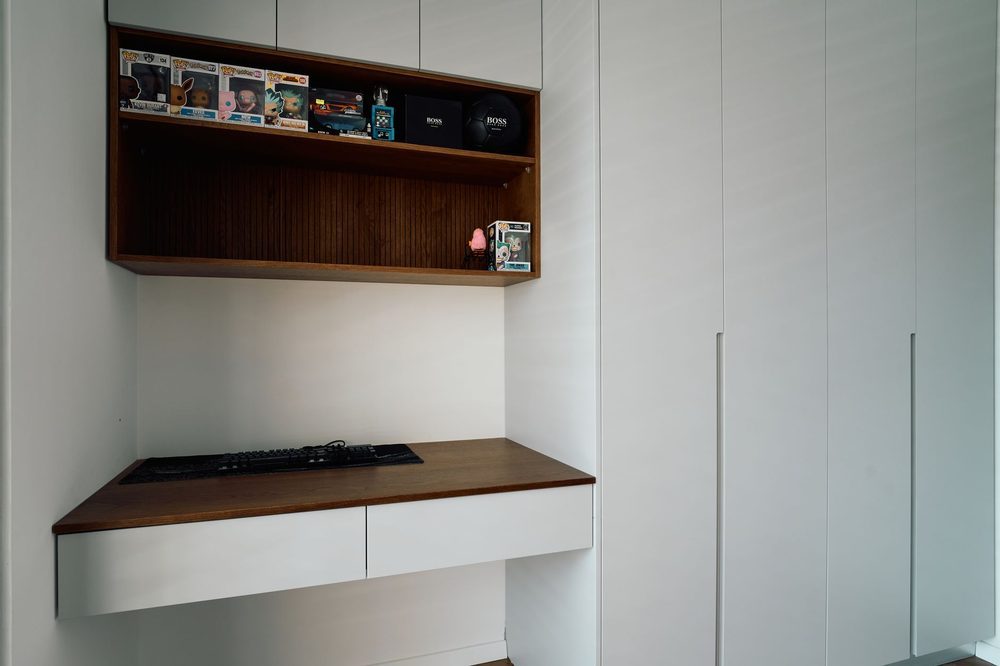
Chapter
Workflow Zoning And Item Flow For A Clear Surface
In a compact Indian apartment, maintaining a clear surface can be a challenge. This chapter focuses on the SWIM model—Set, Work, Inventory, Maintain—to create a frictionless workflow that keeps your dressing table organized and clutter-free.
Day 1 · Defining Your Zones
Day 1
Defining Your Zones
In this apartment
In her 1BHK flat in Pune, Priya struggles with a cluttered dressing table in her 9-foot living room. She decides to implement the SWIM model to create distinct zones for her daily routine.
Clear surface means no uncontrolled or unnecessary permanent items. A chosen tray, lamp, or tissue box may stay.
Today's output: Set, Work, and Inventory zones, plus one written exception if you keep a tray or lamp.
Clear surface is not a vow of zero objects forever. It means no uncontrolled or unnecessary permanent items. An intentional tray, lamp, tissue box, or daily perfume can be part of the grooming station if it has a home and does not become a dump. Everything else leaves after the session.
Tier storage by frequency plus weight plus reach. Daily light items near elbow-to-eye. Heavy items lower. Leak-prone bottles on a lined tray. Valuable jewelry closed.
Before you move on
Identify your Set Zone location.
Establish your Work Zone with mirror and lighting.
Create an Inventory Zone with categorized items.
Day 2 · Implementing Item Flow Policies
Day 2
Implementing Item Flow Policies
In this apartment
In her shared room in Bengaluru, Anjali and Rohan create a system to manage their personal items on a single dressing table without conflict.
Item flow policies streamline the organization process and reduce decision fatigue.
Establish simple rules for item flow and post them inside the Inventory Zone. For example, implement a 'one in, one out' policy: if you bring a new product into the Set Zone, return one to the Inventory Zone before adding another.
Ensure that hot tools cool on hooks or heat-safe pads in the Set Zone. Avoid placing them on the tabletop to maintain a clear surface.
Make sure that bottles return to the same bin every time. This prevents temporary holding on the Set Zone and keeps the area organized.
Before you move on
Write and post item flow policies in the Inventory Zone.
Implement a 'one in, one out' rule for items in the Set Zone.
Ensure hot tools have designated cooling spots.
Day 3 · Establishing Micro Routines
Day 3
Establishing Micro Routines
In this apartment
In a small Mumbai flat, Ravi wants to ensure his morning routine is efficient and clutter-free, so he sets up micro routines to maintain his dressing table.
Two-minute daily reset is return, surface, cords, stool. Cleaning is weekly.
Today's output: a 2-minute card and a weekly card. Photo is optional.
Two-minute daily reset: return items to labeled homes, clear the uncontrolled surface, coil cords, park the stool. Do not promise a full wipe, inspection, and photograph inside two minutes. Weekly: wipe mirror and tabletop, labels, inventory, cooling-zone check, deeper look at mounts. Photographing the clear surface is optional, for people who like a record — not part of the default system.
Before you move on
Daily: return, surface, cords, stool
Weekly: wipe, labels, inventory
Photo optional
Chapter opener
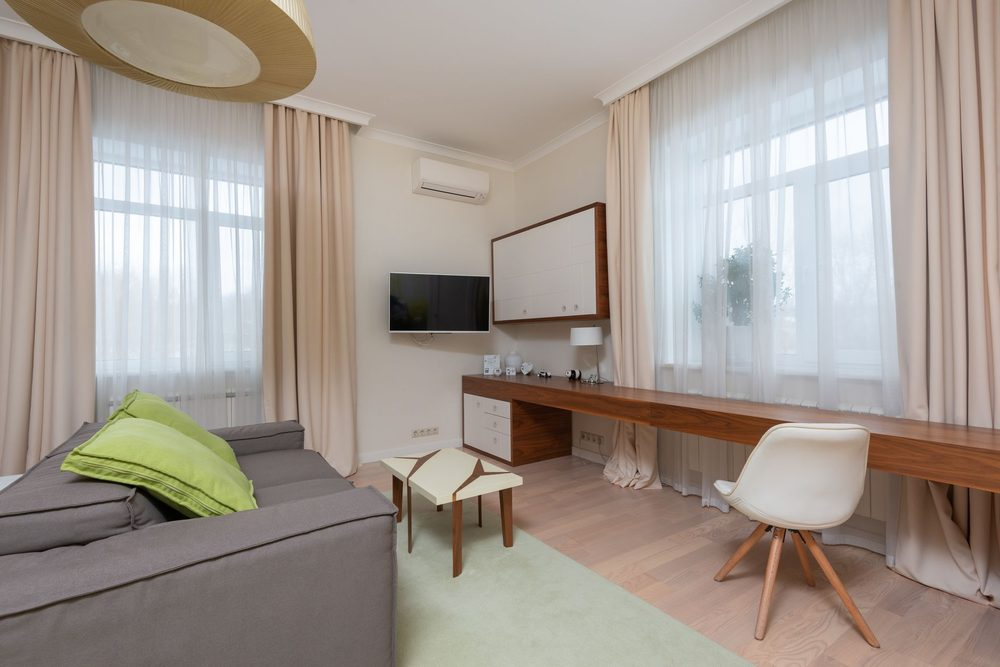
Chapter
Renter mounting: drill-permission path vs no-drill path
'Renter-safe' means compatible with rental constraints, not automatically damage-free or drill-free. Path A is permission-to-drill. Path B is no-drill. Detectors are not guarantees. Adhesive ratings are not universal.
Day 1 · Understanding Your Walls
Day 1
Understanding Your Walls
In this apartment
Ravi lives in a 1BHK in Pune with a 9-foot living room. He is concerned about drilling into his walls and potentially damaging them. He decides to assess the wall type before mounting his shelves.
Scan, mark uncertainty, stop if unknown.
Today's output: wall type, detector marks, and a no-drill list.
A stud/utility detector is a planning aid, not a guarantee. When construction or utilities are uncertain, do not drill; consult a qualified professional. Never rely only on a few inches around an outlet as a universal no-drill zone.
Day 2 · Choosing the Right Anchors
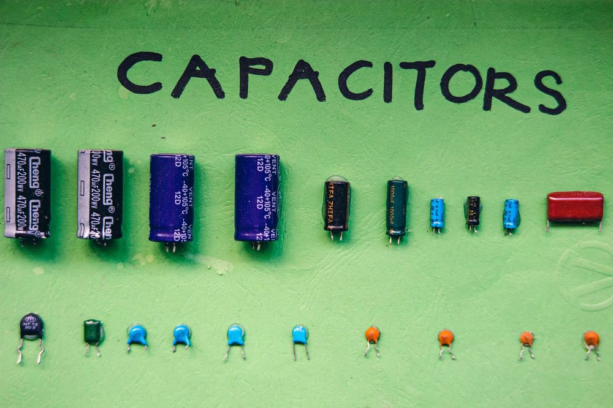
Day 2
Choosing the Right Anchors
In this apartment
Meera, living in a Bengaluru rental with a load-bearing wall, needs to mount a heavy mirror. She researches the best anchors for her wall type.
Match the fastener to the wall and the maker. Adhesive is limited.
Today's output: one fastener type per module, with the surface the maker lists.
Use only products whose manufacturer explicitly approves the actual wall surface. Treat rated load as manufacturer-specific. Humidity, paint, and load direction change real capacity. No adhesive for heavy mirrors unless that product is rated for it.
Day 3 · Path A or path B — then a light stability check
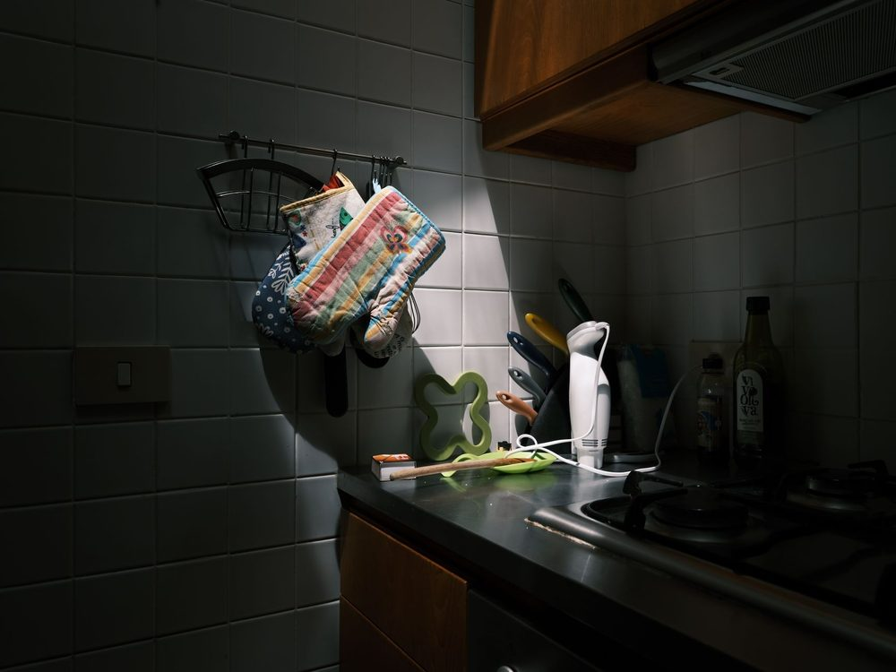
Day 3
Path A or path B — then a light stability check
In this apartment
Problem: a lease with unclear drilling rules. Room: Mumbai flat. Before: one 'SAFE' method that drilled a cleat. Decision: ask the landlord; if no, path B only. Result: lightweight rail, no stud screws.
Cleats and studs are path A. Adhesive modules are path B. Do not mix the names.
Today's output: written permission or a no-drill spec.
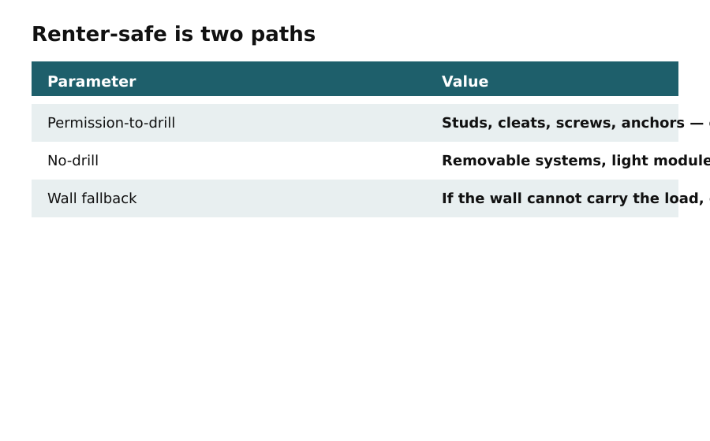
Compatible with rental constraints, not damage-free.
Path A, permission-to-drill: wooden cleat at multiple points including a stud, pilot holes, mounting plates, anchors — only when the landlord permits. Path B, no-drill: removable systems, lightweight modules, manufacturer-rated adhesive on an approved surface. 'Renter-safe' is not a damage-free promise.
After install, cautious stability check with a light load. If the wall cannot carry the system, freestanding fallback.
Day 4 · Safe Removal and Repairs
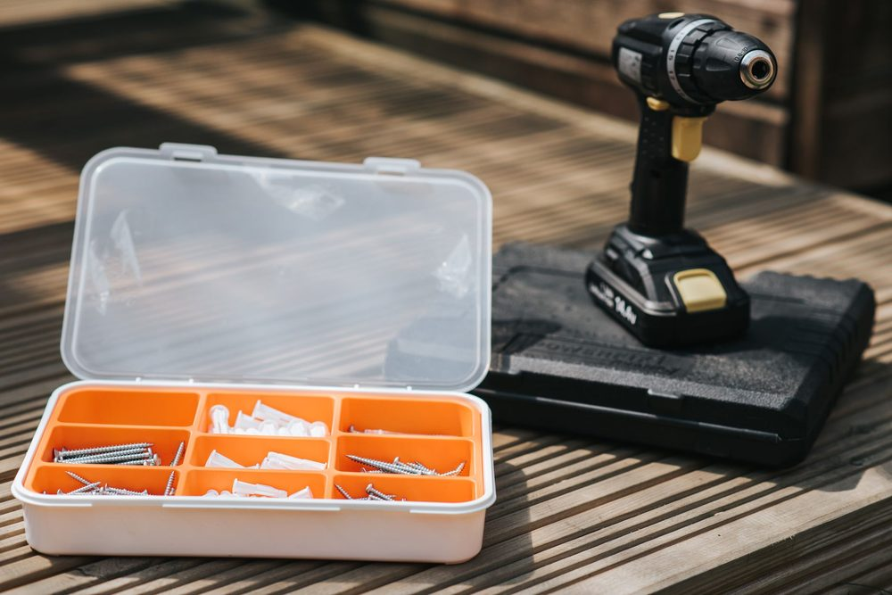
Day 4
Safe Removal and Repairs
In this apartment
Suresh is moving out of his rented flat in Pune and needs to remove all mounted items without damaging the walls.
Having a clean removal plan is essential to protect your deposit.
As Suresh prepares to move, he follows a clean removal playbook. He starts by carefully removing all modules, ensuring that he keeps mounting plates attached to avoid confusion later.
He then backs out the anchors gently, taking care not to damage the wall. For any holes left behind, he fills them with lightweight spackle and sands them smooth after they dry.
Finally, Suresh primes the patched areas and blends the paint to match the wall, ensuring that it looks as good as new for his landlord.
Chapter opener
Chapter
Budget-Tier Sourcing And Style Playbooks
This chapter shows you how to source components that perform reliably without overspending, and how to compose finishes that look cohesive in a compact room. You will learn a tiered approach for smart spending, what to prioritize for lasting performance, and how to translate your style into specific materials and shapes.
Day 1 · Understanding the Spend Smart Triad
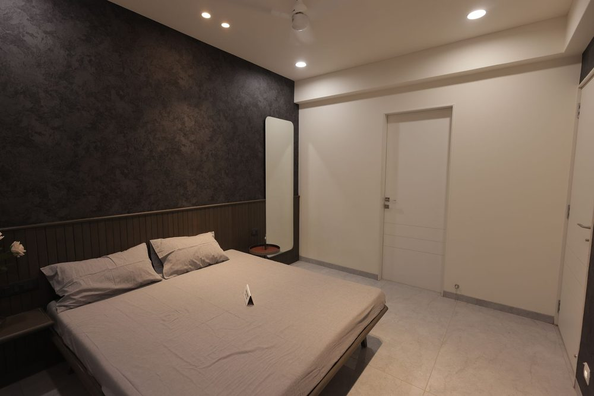
Day 1
Understanding the Spend Smart Triad
In this apartment
In a 1BHK apartment in Pune, resident Anjali has a 9-foot living room and needs to maximize her small dressing area. She wants to ensure her setup is both functional and stylish without cluttering her space.
Invest in quality where it matters most to maintain a clear tabletop.
The Spend Smart Triad emphasizes the importance of prioritizing your budget on lighting quality, reliable mounting hardware, and ergonomically sized mirrors. For Anjali, this means selecting LED lights with a high Color Rendering Index (CRI) of above 90 to ensure accurate color representation, which is crucial for makeup application.
Mounting hardware is equally important. Anjali should opt for solid anchors that can support the weight of her shelves and pegboard. This will prevent any accidents or sagging that could disrupt her clean surface promise.
Finally, the mirror should be sized to Anjali's shoulder width and eye level to reduce strain. This ergonomic consideration not only enhances functionality but also contributes to a visually appealing setup.
Before you move on
Choose lighting with a CRI above 90.
Select reliable mounting hardware rated for the load.
Ensure the mirror is ergonomically sized.
Day 2 · Building Your BPS Budget Ladder
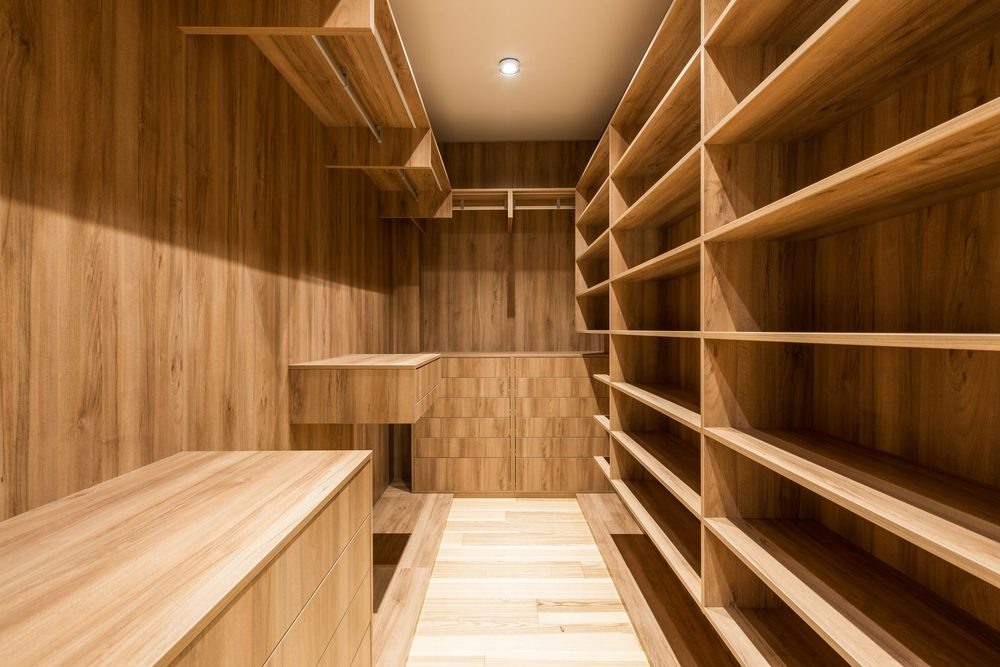
Day 2
Building Your BPS Budget Ladder
In this apartment
In a 102 square foot flat in Bengaluru, resident Rohan wants to create a stylish yet functional dressing area that can accommodate both his and his partner's needs.
Organize your shopping list into tiers to manage your budget effectively.
Rohan can break down his shopping list into three tiers: Basic, Pro, and Signature. The Basic tier includes essential items such as shelves, a pegboard or rail and cup system, a mirror, and plug-in lights. This ensures he has the fundamental components needed for a functional dressing area.
The Pro tier allows Rohan to upgrade his lighting to high CRI options and reinforce his mounting with cleats or rails. Adding a small cabinet will enhance storage and organization, making the space more user-friendly for both him and his partner.
Finally, the Signature tier focuses on finish enhancements, such as a framed or integrated mirror and closed storage doors. This tier not only elevates the aesthetic but also maintains the clear surface promise by minimizing visual clutter.
Before you move on
List Basic essentials: shelves, pegboard, mirror, lights, anchors.
Identify Pro upgrades: high CRI lights, reinforced mounting, small cabinet.
In a 118 square foot Mumbai flat, resident Priya aims for a polished, glam look for her dressing area that can withstand the wear of daily use.
Choose a style playbook to guide your finish choices and maintain a cohesive aesthetic.
Priya can select from three style playbooks: Minimal, Classic, or Glam. For her glam aesthetic, she should focus on polished surfaces, soft gold hardware, and integrated lighting that enhances the overall look without overwhelming the space.
Using a restrained palette is key. Priya should limit her decorative items and opt for closed storage to keep the area looking tidy and organized. This will help maintain the calm atmosphere she desires while still showcasing her personal style.
Incorporating reflective elements, such as a single tray inside a cabinet, will add a touch of glamour without creating visual clutter. This approach aligns with the Breathing Room Rule, ensuring that the space feels open and inviting.
Before you move on
Choose a style playbook: Minimal, Classic, or Glam.
Limit decorative items to maintain a cohesive look.
Incorporate reflective elements thoughtfully.
Day 4 · Quality Checks Before Purchase
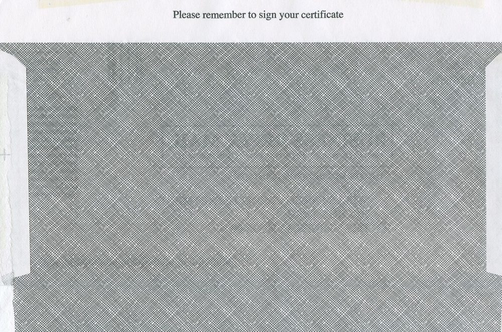
Day 4
Quality Checks Before Purchase
In this apartment
In a small 1BHK in Pune, resident Sameer is preparing to finalize his purchases for a compact dressing area and wants to ensure everything meets his quality standards.
Conduct thorough quality checks to prevent issues during installation.
Sameer should verify fastener ratings for each component to ensure they can support the intended load. This is crucial for maintaining safety and functionality in a small space.
He must confirm that the lighting specifications meet his needs, particularly focusing on a CRI above 90 and matched color temperatures across fixtures. This will ensure that the lighting is effective and flattering for daily use.
Additionally, Sameer should choose finish materials that are easy to clean and resistant to staining. Reading product reviews for durability and installation notes will provide insights into the long-term performance of his selected items.
Before you move on
Verify fastener ratings for each component.
Confirm lighting specs, CRI above 90.
Choose easy-to-clean finish materials.
Day 5 · Creating a Weekend Procurement Plan
Day 5
Creating a Weekend Procurement Plan
In this apartment
In a Bengaluru apartment, resident Neha is ready to implement her dressing area design and needs a clear plan to execute her procurement efficiently.
Plan your procurement timeline to ensure a smooth installation process.
Neha should start by ordering items that require delivery by midweek, ensuring they arrive in time for her weekend build. Confirming in-stock status and shipping windows will help avoid last-minute surprises.
For local purchases, she should create a list with store aisle numbers or links to streamline her shopping experience. This will save time and reduce stress on the day of installation.
Additionally, having a contingency list with equivalent substitutes in neutral finishes will keep her project on track if any of her first choices are out of stock.
Before you move on
Order delivery items by midweek.
Create a local shopping list with aisle numbers.
Prepare a contingency list for substitutes.
Chapter opener
Chapter
Daily Upkeep, Troubleshooting, And Real-World Room Profiles
Keep the CLEAR loop, but cool heat tools on a dedicated zone, not a hook. The 90 sq ft 28-inch walkway is a constrained exception. Electrical limits still apply after the furniture looks calm.
Part 8 · Daily Upkeep, Troubleshooting, And Real-World Room Profiles
Part 8
Daily Upkeep, Troubleshooting, And Real-World Room Profiles
Maintenance cannot invent a safer walkway or a cooler iron.
Chapter 8. Daily Upkeep, Troubleshooting, And Real World Room Profiles Chapter Introduction You built your wall mounted system, dialed in lighting, and matched your components to your budget and style. Now the question is simple. Will your dressing table still look clear and calm a month from now, or after a busy week, or when a guest borrows your mirror and leaves things in new places. This chapter makes sure the answer is yes, every single day.
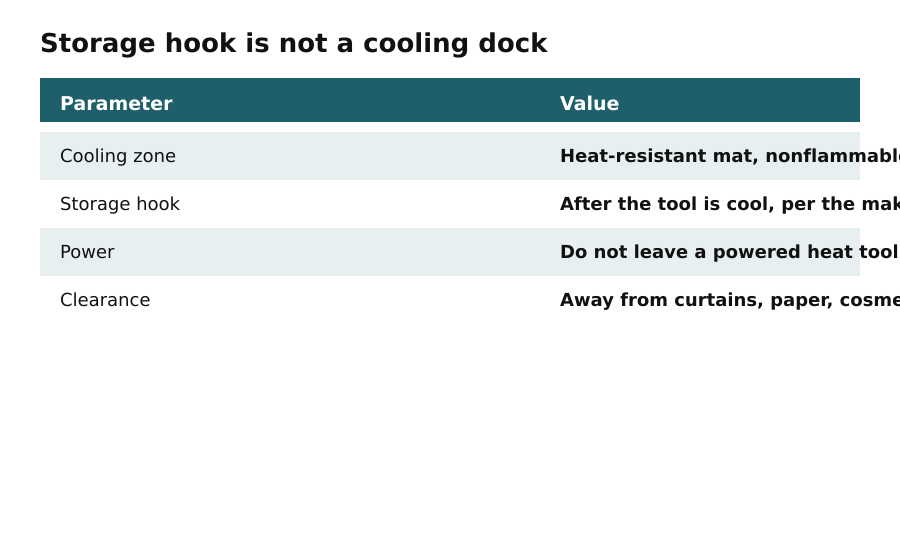
Hot tools cool on a heat-resistant zone. Store only when cool.
You will put a simple routine in place, troubleshoot the handful of failure patterns that cause clutter to creep back, and see three complete room profiles that show the system working in real spaces at 90, 100, and 120 square feet. Building on what you sourced in Budget Tier Sourcing And Style Playbooks, you will use maintenance, labels, and a few smart backup components to lock in your transformation. By the end, you will have a maintenance calendar and a fast decision flow that keeps your surface clear with almost no effort.
A strip does not make high-wattage tools safe. Follow the maker.
product arrives and has no assigned spot. A hot tool needs to cool and ends up parked on the surface. Labels wear off and you forget where backup cotton rounds belong. Cords slither out of channels. Seasons change, daily items shift, and the system falls behind. None of these are big problems alone, but together they break the clear surface promise.
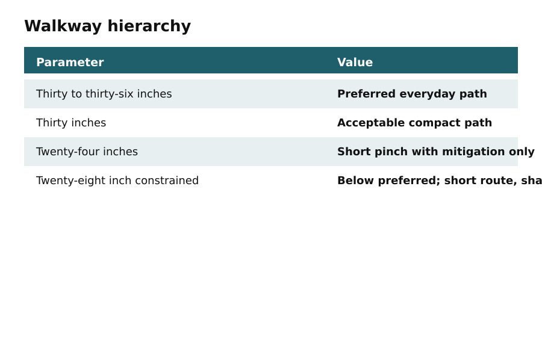
Twenty-eight inches is a constrained exception, not a target.
Visual clutter matters in small rooms. Household clutter can feel stressful in a tight bedroom. Treat that as a practical observation, not a cited clinical finding from this book. In a bedroom under 120 square feet, even a few stray bottles or a tangled cord can make the room feel cramped and less restful. You do not need more storage to fix this. You need a tiny daily habit, a cadence for upkeep, and a plan for the common ways order gets disrupted.
Loop. It is five short actions that happen on repeat so your tabletop stays consistently empty and ready. The loop is simple. Categorize. Group items by use and frequency again, in miniature. Set aside daily, weekly, and occasional items. Locate. Confirm the home for each category in your wall mounted system. Empty. Remove anything sitting on the tabletop. Put it in your palm, then into its proper home.
Audit. Scan for mismatches. If a category is overflowing, note it. If a label is hard to read, flag it. Reset. Restore the room to baseline. Turn off power strips, wipe the mirror, tuck the stool, and cue tomorrow. You will use CLEAR at three speeds. A two minute daily reset that empties the surface, a weekly wipe and micro audit for labels and cord paths, and a monthly re slot where new items are folded into the system without eroding it. Each step connects to a trigger. When you clean the mirror, you also do the daily reset.
When you refill cotton or tissues, you also do the weekly micro audit. When the calendar turns, you do the monthly re slot.
did when you set up zones in earlier chapters. It is not a big project. Stand at the table and scan what is in play today. Daily items are the things you actually touched. Weekly items include at home spa masks or hair treatments. Occasional items include travel palettes or seasonal fragrances. Put like with like in your mind. If you are not sure, ask what day this item will be in your hand next. That tells you the category.
Locate is your space design speaking. Your pegboard cups, floating shelves, and slim cabinets have defined zones already. Daily items live at shoulder to eye level in the primary zone around the mirror. Weekly items live slightly higher or lower. Occasional items live in closed storage or in a labeled box above seat height. If two items are competing for the same location, that is a signal that categories need to be adjusted or that a size constraint is off.
Empty is the fast move that keeps surfaces clear. It is literal. Empty the tabletop after each session. Lift everything that is sitting out. Do not decide where it will go later. Place it in its home now. You can pair this with a closing ritual. Turn off task lights, coil the cord into the channel, and slide the stool under the table. That physical act tells your brain the station is closed.
Audit is where drift gets caught. You are looking for early signs of overload. A cup that is now hard to pull a brush from. A shelf that is now two rows deep. A label that you cannot read from your seated position. An outlet that now has a plug adapter blocking the channel. Note any friction. If you feel even a small hesitation when returning an item, that is a micro audit flag.
Reset is the restore step. Wipe the tabletop with a microfiber cloth, breathe for a second as you see the clear plane, then set your cue for the next cycle. You might place the cloth at the left corner as a visual reminder. If you share the station, leave a friendly label clip that says Reset Done, so the next person starts fresh. Habit loops work best with obvious cues and small rewards. Your cue can be your mirror. When you see a fingerprint, you do the daily reset. Your weekly cue can be the day you strip the bed. Your monthly cue can be the first Sunday morning. Your reward is built in. A clear, ready surface that greets you tomorrow with zero friction.
Implementation Strategy Follow this step by step plan to put the CLEAR loop into your routine and keep it there. Create Your Reset Kit. Place a small caddy on a wall rail with a microfiber cloth, a mini spray bottle with gentle cleaner, a label pen, extra label tape, and a few cable ties. This kit lives off the surface so it never creates clutter. Set Your Cues. Write down three triggers, one for daily, one for weekly, one for monthly. Daily, after you finish grooming at night, wipe the mirror and do the two minute reset. Weekly, during laundry day, do a five minute micro audit and wipe down shelves. Monthly, on the first weekend day, do a re slot and seasonal swap if needed.
Define One In One Out. Tape a small card inside the cabinet door that reads One In One Out. When a new palette, brush, or bottle arrives, choose the least used item in that category to leave. Put that item in your exit bin immediately. Label For Action. Refresh labels so they read like verbs or clear groups.
Guest Caddy. Use high contrast labels that you can read while seated. Tune Your Cord Paths. Re run cords through channels, clips, or a cable sleeve. Leave enough slack for use, but coil the rest and dock the plug on a hook or in a small cup. Label the plug end if you have multiple tools. Place The Overflow Bin. Install a small open bin on the wall above seat height labeled Review. This is your buffer for items you are unsure about.
Empty it during the monthly re slot. Run The Two Minute Reset. At night, stop, look at the surface, and empty it. Put each item home. Wipe the tabletop, swing the stool in, and switch the lights off. If you skip the morning, the night reset is non negotiable. Do The Five Minute Micro Audit. On your weekly day, inspect labels, check cord channels, wipe LED strips or sconces, and refill cotton or tissues. If you had to fight a container, adjust it now instead of later.
Do The Monthly Re Slot. Take the Review bin down. Ask what is being used this season. Move weekly items up or down as appropriate. Remove anything expired or unloved and put it in the exit pathway, not back in the system. Share The Rules. If you have a partner or guests, write three friendly rules on a card near the mirror. Return items to labeled homes. Cool hot tools on the cooling zone, not the dressing table and not a storage hook. Leave the surface clear. That sets expectations without friction.
Real World Application And Room Profiles To show how this system works in real spaces, here are three complete profiles with measurements, components, and walkways. Adjust materials and finishes to match your budget tier and style from the previous chapter. Profile One, 90 Square Feet, Narrow Bedroom Context. A long narrow room where the bed and dressing table share one wall. Floor space is tight, so slim modules protect the walkway, which holds at about 28 inches — a constrained walkway, not a success target. It falls below the preferred 30-inch range. It is acceptable only because the route is short, protrusions are minimized, and it remains usable. If this is the primary everyday path, redesign toward 30–36 inches.
Table And Mirror. A 16 inch deep dressing table with a 24 inch mirror centered at seated eye level. Vertical LED strips on both sides provide even light, with a simple plug in control tucked into a cord channel. Wall Storage. A pegboard to the right of the mirror with cups for brushes and pencils, and hooks for heat tools. A small cabinet above seat height on the left holds bulk skincare and backups.
Cord Management. A surface mounted cord channel runs under the table to a single outlet. Cords from LED strips and tools flow into the channel, then to a switched power strip placed off the floor on the wall. CLEAR In Action. Daily, brushes go back into the pegboard cups. The hot tool cools on a heat-resistant mat in a cooling zone, away from curtains, paper, cosmetics, and cables, unattended power off. A storage hook is not a cooling dock; hang it only when cool, following the appliance maker. Weekly, labels on cups are refreshed if smudged. Monthly, the small cabinet holds seasonal swaps, like winter lip treatments.
Anchors And Walls. Drywall with studs near the mirror receives the pegboard and cabinet on wood screws. Where studs are not available, use rated toggle anchors that match the component weight. Renter tip, use a smaller pegboard to reduce holes, and place it where you can hit at least one stud. Profile Two, 100 Square Feet, Rectangular Room Context. The table sits on a short wall across from the bed. The walkway holds at 32 inches, so you can open a small dresser nearby without conflict. This room serves two people.
Table And Mirror. A 20 inch deep table with a 30 inch mirror. Dual sconces flank the mirror at eye level, wired to a shared dimmer. The brighter light supports shared morning routines. Wall Storage. Two floating shelves above the table. The lower shelf is for staging, where you place the three items in play. The upper shelf displays fragrances and a small plant. A small cabinet to the side holds bulk skincare and refill packs. A rail with cups sits under the lower shelf for shared brushes and pencils.
Shared Use. Color coded cup labels and a Guest Caddy for visiting friends or family keep boundaries clear. A divider in the cabinet separates partner routines, with labels that match the cups. CLEAR In Action. Daily, each person empties the staging shelf back to labeled homes. Weekly, both refresh labels and check the refill list. Monthly, they do one in one out together and move a seasonal kit into the cabinet.
Anchors And Walls. Plaster walls need masonry anchors or screws placed into lath and stud. Pre drill small pilot holes to avoid cracking. Use wide shelf brackets to distribute load. Profile Three, 120 Square Feet, Square Room Context. This room has generous wall width, a closet door swing to respect, and a clear walkway of 36 inches. The system is more complete, with buffer zones for door movement.
Table And Mirror. A 22 inch deep table with an integrated lighted mirror. The light is set to a warm neutral temperature for accurate color. Wall Storage. Slim cabinets on both sides of the mirror provide symmetrical closed storage. A pegboard tool dock near the right cabinet holds dryer and straightener. A fragrance rail with an anti tip lip runs on the left above eye level. An ambient ceiling fixture ties the light layers together.
Cord Management. Channels run inside the cabinets for a concealed look. A single outlet behind the table feeds a narrow power strip mounted within the right cabinet. CLEAR In Action. Daily, tools dock on the pegboard and cords drop into their channels. Weekly, the fragrance rail gets a dust wipe and bottles are rotated to avoid crowding. Monthly, a larger seasonal swap box rotates summer and winter kits.
Anchors And Walls. Masonry walls behind the cabinets take concrete screws with sleeves. If you are renting, install only the pegboard with removable fasteners rated for the weight, and use a floor standing drawer unit for closed storage while preserving a clear surface. Common Pitfalls And Targeted Fixes Overflow From New Purchases. Solution, keep the Review bin on the wall.
Add the item there. At the monthly re slot, apply one in one out. If nothing is worthy of exit, the new item does not enter. Hot Tools Left Out. Solution, create a cooling zone: heat-resistant mat, nonflammable surroundings, away from curtains, paper, cosmetics, and cables. Do not store until cool. Do not leave a powered heat tool unattended. Follow the appliance manufacturer's cooling and storage instructions. A storage hook is not a cooling dock.
Unclear Or Missing Labels. Solution, use high contrast, simple category names. If a label wore off, upgrade to a printed label or embossed tape. Place labels where your eye lands while seated, not at the top edge. Cord Sprawl. Solution, upgrade to a larger channel and add adhesive clips near the tool dock. Label each plug end. If you must cross a walkway, reroute along the baseboard with low profile raceway.
Seasonal Changes. Solution, prepare seasonal swap boxes inside your cabinet with labels like Summer Hair or Winter Skin. During the monthly re slot, swap the box contents rather than handling items one by one. Guest Disarray. Solution, create a dedicated Guest Caddy with simple rules printed on a card. Include a compact mirror, disposable cotton, and a set of basic brushes. Ask guests to use the caddy and return it to its labeled rail.
Quick Fix Checklists Five Minute Pre Guest Reset. Empty the tabletop. Place three daily items on the staging shelf, everything else in labeled homes. Wipe mirror and surface. Coil cords. Place Guest Caddy on the rail. Spill Response. Blot with a microfiber cloth. Spray gentle cleaner on the cloth, not the surface. Wipe in straight lines to avoid pushing liquid into seams. Remove nearby items to dry. Do not return items until fully dry.
Broken Mount Stabilization. If a shelf loosens, remove items immediately. Place them in the cabinet or on the bed. Use painter's tape under the shelf to hold temporarily. Schedule a re anchor within 24 hours. Do not reuse the same holes if they are stripped. Light Outage Workaround. If a bulb fails, bring a portable task light to the side of the mirror and position it at eye level. Schedule a replacement.
Check cord channels for damage before reinstalling.
Small, consistent habits keep surfaces clear with less effort than occasional deep cleans. The CLEAR loop, Categorize, Locate, Empty, Audit, Reset, works at daily, weekly, and monthly speeds. Obvious cues and small rewards make maintenance automatic. One in one out prevents slow accumulation and protects every category. Clear, high contrast labels keep items moving back to homes.
Cord channels and labeled plugs eliminate visual and functional mess. Seasonal swap boxes let the system evolve without clutter. Guest caddies and simple rules preserve order when others use your station. Room profiles show how to tune components to space and walkway targets. Anchors must match wall type for safety and longevity.
Write your three maintenance cues and post them near the mirror. Assemble a Reset Kit with cloth, cleaner, label pen, label tape, cable ties, and spare hooks. Install or adjust your Review bin and exit pathway for one in one out. Refresh labels using clear category names you can read while seated. Reroute cords through channels and add adhesive clips near tool docks.
Create seasonal swap boxes, label them, and store them in closed space. Set a five minute weekly micro audit on your calendar that aligns with laundry day. Draft and display three shared rules if you have a partner or host guests. Choose one room profile as your reference, then measure your walkway and adjust components to hit the target clearance. Sketch a simple troubleshooting flow, if clutter appears, check overflow, heat tools, labels, cords, seasons, guests, then apply the fix.
Chapter Conclusion A clear dressing table surface does not depend on willpower. It depends on a tiny loop you repeat, a few cues you can see in your space, and a plan for the predictable ways disorder tries to sneak back. You now have the CLEAR Habit Loop, a short set of upgrades to labels and cords, quick fix checklists for surprises, and three concrete room profiles that show the system in action at 90, 100, and 120 square feet. Your walkway is protected.
Your tabletop is ready. Your routine is lighter. Carry forward the spirit of the previous chapter by letting your budget and style support your maintenance. Choose finishes that wipe clean, lighting that invites you to reset, and modules that welcome your hand back to the same spot every day. In the coming pages, you will keep building confidence, refining your system as your needs evolve, and enjoying a bedroom where your dressing table always looks calm, spacious, and completely under control.
Chapter opener
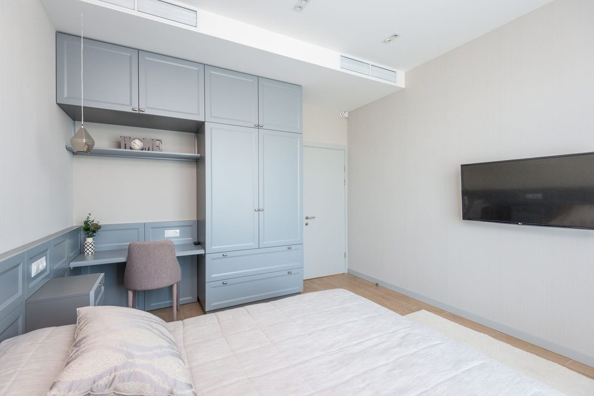
Chapter
Weekend Implementation Checklist for a Clear Surface Dressing Table
This checklist provides a structured approach to creating a clear surface dressing table in bedrooms under 120 square feet, ensuring an organized and clutter-free space.
Day 1 · Purpose and Benefits
Day 1
Purpose and Benefits
In this apartment
In a 1BHK apartment in Pune, resident Aditi struggles with her cluttered dressing table in her 110 square foot bedroom. She decides to implement this checklist to create a more organized space.
A clear surface dressing table enhances functionality and aesthetics.
This checklist condenses decision-making into simple actions, making it easier to achieve a tidy dressing area. By shifting storage to the wall, it prevents clutter from accumulating on the dressing table, allowing for a more functional and visually appealing space.
The checklist also reduces installation errors through careful checks of level, torque, load, glare, and reach. This ensures that every element is securely mounted and positioned correctly, minimizing the risk of future issues.
For renters like Aditi, the checklist highlights non-drilling alternatives and safe patch steps, making it accessible for those who may have restrictions on altering their living space.
Day 1 · How to Use
Day 1
How to Use
In this apartment
In a Bengaluru rental with a load-bearing wall, resident Ravi prepares to implement the checklist for his 96 square foot bedroom, ensuring he follows the steps carefully to avoid any issues.
Following a structured approach ensures successful implementation.
To begin, complete the templates on Friday evening to outline your plan. This preparation will help you visualize the layout and identify any potential challenges before you start working on the actual setup.
Next, gather all necessary materials and tools on the same day. This includes items from your shopping list, ensuring you have everything at hand to avoid interruptions during the installation process.
On Day 1, follow the checklist in order, pausing at each quality check before proceeding to the next step. This will help you maintain a high standard and ensure that everything is installed correctly.
Day 1 · Weekend Checklist, Day 1
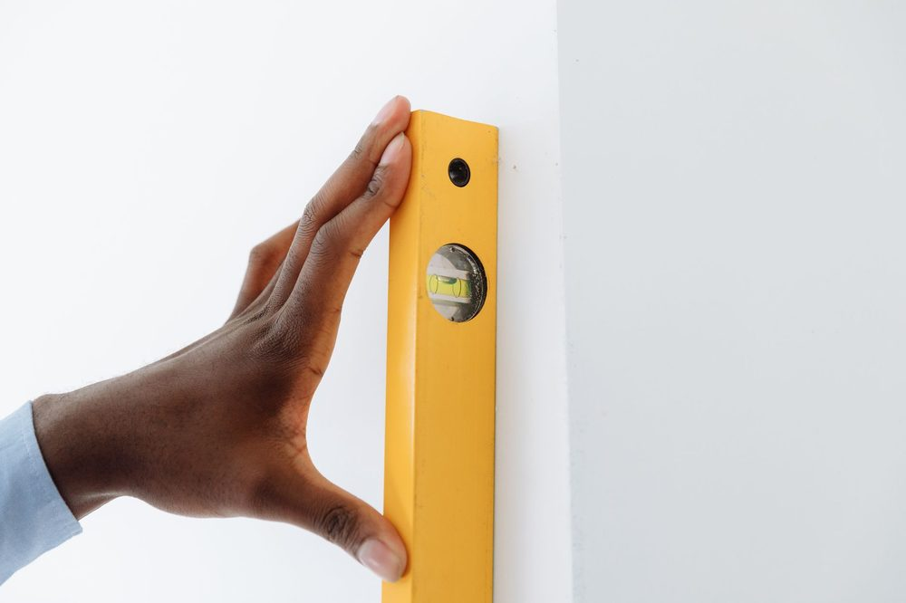
Day 1
Weekend Checklist, Day 1
In this apartment
In a Mumbai flat with a window on only one side, resident Neha is ready to finalize her layout for her dressing table setup in her compact 100 square foot bedroom.
Careful planning and execution lead to a successful installation.
Begin by time-blocking your schedule from 9 to 10 AM to finalize the layout on paper and with wall tape. This step is crucial for visualizing how the modules will fit in the space and ensuring that everything aligns correctly.
Next, mark pilot hole locations, aligning them with studs if drilling is allowed. This will provide a secure anchor for your wall-mounted modules, preventing any future accidents or damage.
Perform a quality check using a bubble level across your marks to ensure everything is straight. After drilling pilot holes, install the mounting plates and anchors, confirming torque by hand snug plus one quarter turn to ensure stability.
Day 2 · Weekend Checklist, Day 2
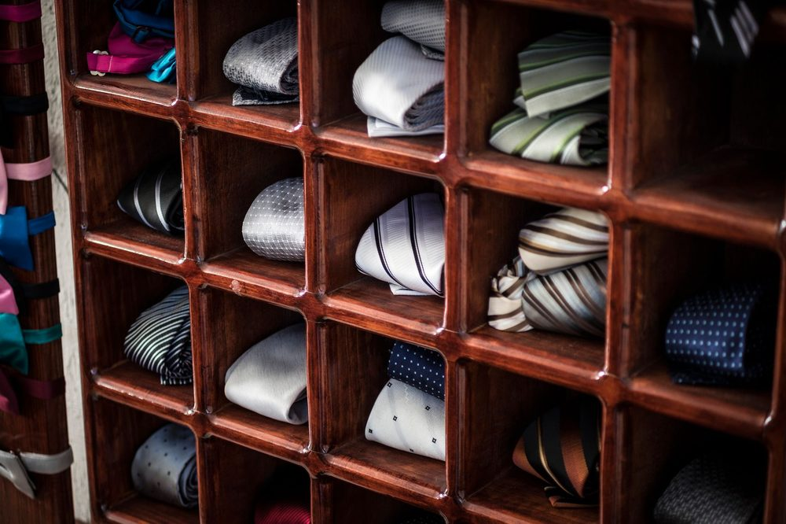
Day 2
Weekend Checklist, Day 2
In this apartment
In a 1BHK apartment in Pune, resident Aditi is excited to attach the wall modules and organize her dressing table items after a successful Day 1.
On Day 2, start by attaching the wall modules, such as shelves, bins, or rails. This will create designated spaces for your items, reducing clutter on the dressing table.
Conduct a quality check to confirm that daily items are within easy arm's reach. This is essential for maintaining a functional dressing area that supports your daily routine.
As you transfer items from the dressing table to the modules, do so one category at a time. This methodical approach helps prevent confusion and ensures that everything has a designated spot.
Chapter opener
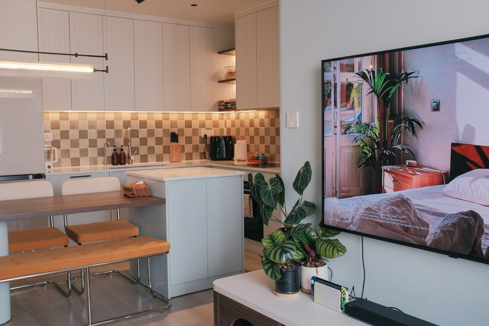
Chapter
Measurement And Mounting Template Pack
and installation kit for clear surface dressing tables in bedrooms under 120 sq ft. Use the scaled room map, vanity wall baseline, clearance calculator, spec sheet, mounting stencils, inventory volume worksheet, and cord management template to design wall mounted storage that keeps the tabletop empty and the walkway safe.
Part 10 · Measurement And Mounting Template Pack
Part 10
Measurement And Mounting Template Pack
Walkway on the card: write 30–36 preferred. If you measure 28 inches, label it constrained exception and list why (short route, shallow modules, still usable) or redesign. Twenty-four inches is mitigation only, not the template default.
and installation kit for clear surface dressing tables in bedrooms under 120 sq ft. Use the scaled room map, vanity wall baseline, clearance calculator, spec sheet, mounting stencils, inventory volume worksheet, and cord management template to design wall mounted storage that keeps the tabletop empty and the walkway safe.
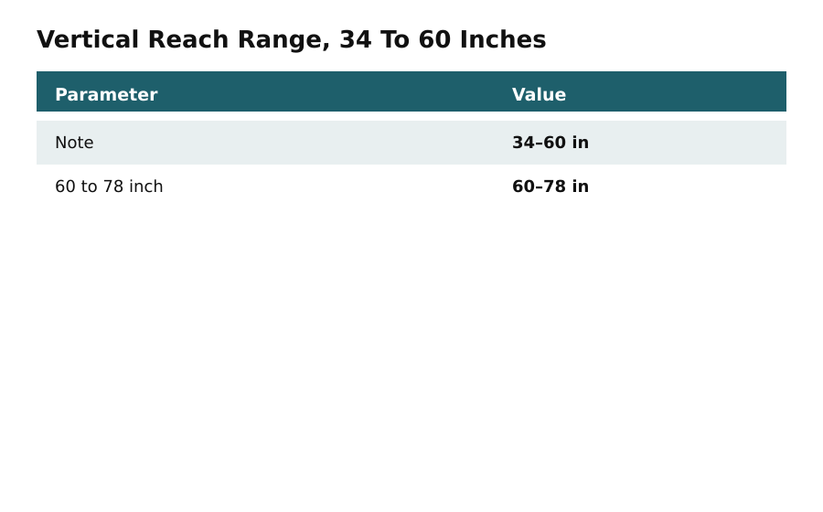
Vertical reach range, 34 to 60 inches for daily items, 60 to 78 inches for seasonal items.
Eliminate guesswork with measured layouts that fit small rooms. Maintain a clear vanity surface by moving storage to the wall. Reduce failed installs with stud and anchor planning, renter safe options, and hazard checks. Protect circulation space with proven clearance numbers for walking and sitting. Track product inventory so container and docking plans match real needs.
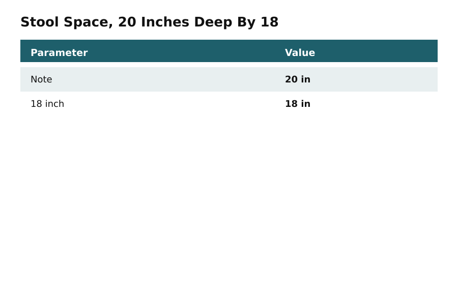
Stool space, 20 inches deep by 18 inches wide behind the vanity.
Print the pack at 100 percent scale, or use the digital files in your note app. Measure the room, mark walls, ceiling height, door width, and swing. Map studs with a stud finder, map outlets and switches, then add these to the grid. Set your Vanity Wall Baseline, then place zones, shelves, pegboards, and cabinets. Run the clearance calculator to confirm walkway and stool space.
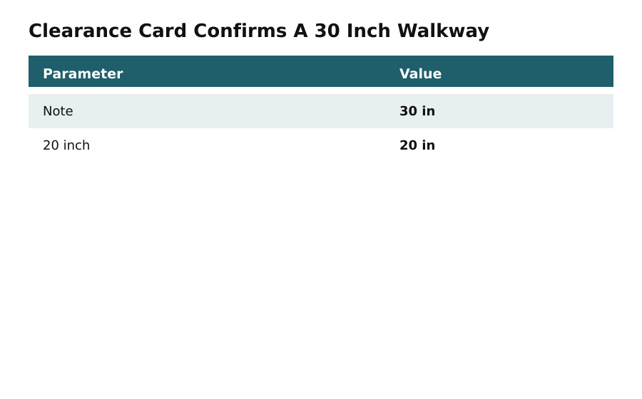
Clearance card confirms a 30 inch walkway and 20 inch stool zone.
Fill the spec sheet with SKUs, finishes, and fasteners before you purchase. Use mounting stencils to tape drill marks to the wall, then install. Complete the inventory worksheet and cord template so docking and cable paths are tidy.
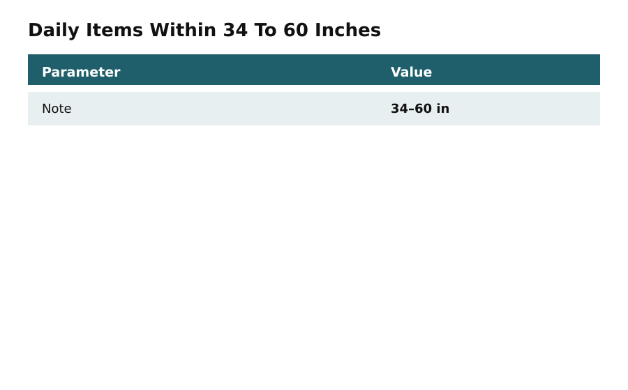
Keep daily items within 34 to 60 inches from the floor.
Scaled Grid Room Map, 1,4 inch equals one foot Fields, Room length, Room width, Ceiling height, Door, swing arc, Windows Layers, Studs, spacing, Outlets, Switches, Baseboard depth, Radiator, if any Note, Tape the printed map sections to the wall for visual spacing. Vanity Wall Baseline Template, vertical zones Baseline height, 30 inches to 34 inches, typical vanity top Zones, Counter line, 30 to 34 inches, Daily reach, 34 to 60 inches, Overhead storage, 60 to 78 inches Mark mirror centerline, stool parking zone, task lighting height.
Clearance Calculator Card Walkway minimum, 30 inches clear from vanity edge. Stool space, 20 inches deep by 18 inches wide behind the vanity. Forward reach range, 18 to 24 inches from the wall face. Vertical reach range, 34 to 60 inches for daily items, 60 to 78 inches for seasonal items. Result box, Approved, Needs adjustment. Spec Sheet Template Item name, SKU, Dimensions, Finish, Weight, Mount type, studs or anchors, Fastener type and count, Supplier link, Price.
Mounting Plate Stencils Pegboard, mark corner holes, anchor spacing 16 inches on center if studs align. Shelf bracket, mark top and bottom screws, confirm level, use two anchors minimum per bracket when not on studs. Slim cabinet, mark four anchor points, verify door swing clearance. Inventory Volume Worksheet Category list with counts, skincare, hair tools, cosmetics, accessories, tools Container type, bin, rail cup, shelf tray, hanger count Docking map, peg hook positions, shelf zones, cabinet cubbies Conversion note, One medium bin holds about 12 small items, adjust by item size.
Cord Management Template Devices, hair dryer, straightener, mirror light, charger Route plan, vertical channel, horizontal channel, strain relief position near outlet Fixing method, clips, adhesive channels, reusable ties, removable tabs. Renter Safe Hazard Check Confirm no hidden pipes or wires where you plan to drill. Prefer removable tabs or tension rails when studs are unavailable.
Test adhesives on a hidden area before full install.
Map shows studs at 16 inches on center. Pegboard aligned to two studs. Daily reach zone holds skincare cups. Overhead shelf holds bulk items. Walkway remains 32 inches. Cord template routes hair tool cables down a vertical channel to an outlet with a clip for strain relief.
No drilling allowed. Use adhesive pegboard strips and lightweight rail cups. Spec sheet lists removable tabs rated for the item weights. Clearance card confirms a 30 inch walkway and 20 inch stool zone. Inventory worksheet limits bin count to two medium bins to prevent overload.
Place heavy items on studs, light items on anchors or adhesives. Keep daily items within 34 to 60 inches from the floor. Test one fixture before committing the entire wall plan. Label bins and hooks so habits stick. Photograph your map and final setup for reference.
Overloading adhesives beyond rating. Ignoring door swing when placing cabinets. Mounting storage too low, which crowds the stool zone. Skipping cord strain relief, which causes pull and clutter.
Compare your finished wall plan with the main ebook layout recipes. Use the templates during shopping and installation, then update the spec sheet after final mounting. Revisit the inventory worksheet monthly to keep the vanity surface clear.
Chapter opener
Chapter
Daily Reset And Troubleshooting Guide
Daily is two minutes: return, clear uncontrolled items, cords, stool. Weekly is cleaning, labels, inventory, and a light look at mounts. A photo is optional. Intentional exceptions may stay on the dressing table.
Day 1 · Purpose and Benefits
Day 1
Purpose and Benefits
In this apartment
In a 1BHK apartment in Pune, resident Aditi struggles with a cluttered dressing table that disrupts her morning routine. By implementing the Daily Reset, she finds her space transformed into a calm environment.
A clear surface promotes a calm and efficient routine.
Maintaining a clear surface every day is essential for a smooth morning routine. This approach not only supports a sense of calm but also allows for faster preparation times. By setting measurable success criteria, such as ensuring no permanent items on the tabletop, you can easily track your progress.
The Daily Reset method helps manage common issues like overflow purchases, hot tools, and guest disarray. It is designed to be renter-friendly and quick to implement, making it perfect for compact living spaces.
By following this guide, you can create a system that handles clutter efficiently, ensuring your dressing table remains a functional and serene part of your bedroom.
Day 2 · How to Use
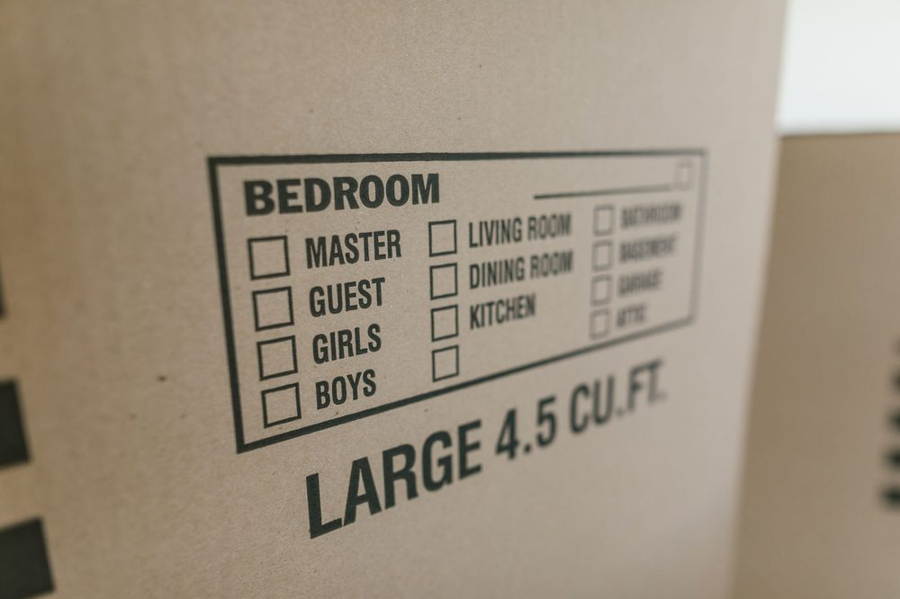
Day 2
How to Use
In this apartment
In her small Bengaluru rental, Priya posts the Daily Reset checklist at eye level near her mirror. This simple step helps her stay on track with her organization routine.
Visual reminders enhance adherence to the Daily Reset routine.
To effectively use the Daily Reset system, start by posting the checklist near your mirror at eye level. This ensures you see it every time you approach your dressing table, reinforcing the habit of resetting your space.
Schedule a weekly cadence for your reset on the same day and time, dedicating just ten minutes to this task. Additionally, plan a monthly audit for twenty minutes on the first weekend of each month to assess your progress and make necessary adjustments.
Consider printing and attaching icon labels to all wall zones and bins. These visual cues will help you quickly identify where each item belongs, making it easier to maintain organization.
Day 3 · Daily Reset Process
Day 3
Daily Reset Process
In this apartment
In her 100 square foot micro room, Neha dedicates two minutes each morning to the Daily Reset, ensuring her dressing table remains clutter-free and functional.
Two minutes cannot include a deep clean and a mandatory photo.
Today's output: a 2-minute list that actually fits two minutes.
Return items to labeled homes. Clear uncontrolled items from the dressing table. Coil cords. Park the stool. An intentional tray, lamp, or tissue box may remain. Cool any heat tool on the cooling zone before you hang it.
Wipe, inspect mounts, and photograph only if you want — those belong to weekly or are optional.
Before you move on
Return
Clear uncontrolled items
Cords
Stool
Day 4 · Weekly Cadence and Monthly Audit
Day 4
Weekly Cadence and Monthly Audit
In this apartment
In her shared room in Mumbai, Riya implements a weekly cadence to sort through her dressing table items, ensuring that her space remains organized even with guests around.
Regular maintenance prevents clutter from building up.
Today's output: weekly wipe and expiry glance; monthly one-in/one-out and cooling-zone check.
Weekly: wipe mirror and tabletop, labels, cord paths, lined leak trays, and a light look at mounts. Check PAO and obvious spoilage. Monthly: inventory, packing allowance, jewelry still in closed storage, nail and perfume away from heat.
The weekly cadence involves a ten-minute session to empty the overflow bin, sorting items into keep, store, discard, or donate categories. This proactive approach helps prevent clutter from accumulating on your dressing table.
During this session, test each label to ensure clarity. If you hesitate when identifying an item, take the time to re-label it for better understanding. This will streamline your organization process and make it easier to maintain.
Inspect the cord channel during your weekly cadence. Replace any worn clips and untwist cables to ensure everything is in good condition. Additionally, refresh your guest caddy by stocking it with essentials like cotton pads, hair ties, and a mini brush.